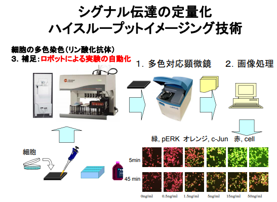

20181210
H立用語
■QA(Quality Assurance:品質保証): 製品やシステムの性能や機能を保証するための検証作業。第三者の立場で品質を見極め、最終的な品質を保証する責任を持つ。
■構成管理: 構成要素（仕様書、ソースコード、計画書など）に対する変更を管理・検証し、その状況を記録する活動。主に以下の3つ。
①変更管理: 変更した履歴を残す
②バージョン管理: ある時点に切り戻しできるようにする
③不具合管理: 不具合の原因と状況を確認できるようにする
■B票（不具合管理票）: テストで発生した不具合・問題を記録する帳票（業務に関連する書類）
■C票: 仕様変更の発生内容を記録する帳票
■P票: B票もしくはC票の起票後に、それを契機に行うプログラム修正内容を記録する帳票
A社独自のもの
■CPRD Viewer, PSSA Viewer：（F井）から引き継いだR/Shinyのwebアプリ
■DR:マイクロアレイデータ取得元の部名。
■OCLN: マイクロアレイデータ の共同研究先。
■GAPFREE：産学官共同創薬研究プロジェクト
■XCEED：A社の新サーバ
■RWI（Real World Informatics and Analytics）：A社が設立したビックデータを活用するための専門機能。コンプライアンスや国家間の法律などを考慮して世界中のヘルスケアデータ（＝real world data）を活用して新たな価値を作りだす。
■BKL(BIOBASE Knowledge Library):遺伝子・タンパク質の発現・機能・疾患との関連などを100万以上の文献から専門家がマニュアルでキューレーションし纏め上げたDB。有償DB。
A社が購入しているタンパク質の発現・機能・疾患に関する有償データベース。
■DHL( Dispatch HyperLink ):URLを変換し転送するアプリケーション
医療系
■NCBI(National Center for Biotechnology Information):<https://www.ncbi.nlm.nih.gov/>分子生物学やバイオインフォマティクスの研究に用いられるデータベースの構築及び運営や、研究に用いられるソフトウェアの開発を行っているアメリカの機関。
■Entrez Gene：NCBIのデータベース内での遺伝子ID。
■Open Target platform<https://targetvalidation.org/>：薬剤の標的（タンパク質、タンパク質複合体またはRNA分子）を特定するための調査支援を目的とした薬剤の標的と疾患の関連性、薬剤の標的情報および疾患の情報についての統合データ。
遺伝子名や疾患名などのキーワード検索でデータを取得でき、薬剤標的と疾患の関連性についてはバブルチャート/一覧表/ツリー形式で表示する。
データ取得はREST APIを利用。
内包しているデータ（20161226時点）
薬剤の標的情報：31,071件
薬剤の標的と疾患の関連情報：2,559,080件
疾患情報：8,659件
データソース：13個の public DB
■PhenoDigm：動物モデルの表現型情報にもとづいて人の疾患遺伝子候補を順位付けするアルゴリズム。
■AKI（acute kidney injury: AKI）: 急性腎障害。何らかの原因で短期間に腎機能が急速に低下した状態の総称。
■SLE(systemic lupus erythematosus)：全身性エリテマトーデス。細胞の核成分に対する抗体を中心とした自己抗体が作られてしまうために、全身の諸臓器が侵されてしまう病気。
■PFAM：タンパク質ドメインの類似配列データベース
■MOE(Molecular Operating Environment)： カナダCCG社が独自に開発したSVL（Scientific Vector Language）を搭載する統合計算化学システム。smilesを構造式画像に変換などができる。
■脱塩（Wash）：NaやOHを取り除いて正式な構造式に戻すこと
■Largest Fragmet：分子量が大きい化合物の構造だけにしたもの
■HCS(ハイコンテントスクリーニング)：
電動顕微鏡、マルチパラメータの画像処理、および視覚化ツールを用いた一連の解析方法。
新薬の候補となる膨大な数の化合物から，有用なものを迅速に高効率で選別する。
１．培養した（薬剤などを投与多め/少なめ/なしにした）細胞をセットした蛍光プレートを電子顕微鏡で撮影して画像の形式でデータを取得する。
画像として蛍光測定または発光測定した結果を保持=細胞内におけるターゲット分子の増減、局在の変化や細胞の運動性や形態情報などが含まれる（はず）
２．取得したデータを解析するために画像処理を行いスクリーニング（選別）を行う。
複数のデータ（撮影する光の波長が違うデータとか）を得ることで多面的な解析ができる点に特徴がある。
一言でいうと培養した細胞から取得した大量の画像データを解析して薬剤の効果判定をする手法。
マイクロアレイのすごい版みたいな感じかなあ。。。
処理フロー概要

■ImageJ：Javaの仮想マシン上で動作するNIHで開発されたオープンソースでパブリックドメインの画像処理ソフト。
■IC50：50%阻害濃度（50%そがいのうど、IC50）または半数阻害濃度。
化合物の生物学的または生化学的阻害作用の有効度を示す値。
どの濃度で、その薬物（毒など）が標的としている物の半数（50％）の働きを阻害できるかを示す。
■Murcko scaffolds
化合物から余分な側鎖を取り払い、"環構造"とそれらをつないでいる"Linker"のみで表現することでより単純な化合物表現
環構造を全く持たない化合物についてはMurcko scaffoldsが定義されない
Murcko scaffoldsの単純な環構造から似ている化合物クラスタリングするとかに使う
化合物構造活性相関において機械学習を行いたい場合にも有用で、DeepChemの Scaffold spliter は、Murcko scaffolds に基づいて化合物データセットを分割している
■プロテインキナーゼ（以下，キナーゼ:kinase）:
マグネシウム（またはマンガン）イオンを必須とし，基質となるタンパク質の水酸基にアデノシン三リン酸（ATP）のγリン酸基を転移する酵素群
キナーゼは役割分担しながら，外部刺激に応答するシグナルを伝達し，細胞の分化，増殖，アポトーシスなどを通じて複雑な生体機能を恒常的に制御している
キナーゼはどれも生命にとって必要不可欠であるだけに，絶妙に制御された活性バランスの崩壊はガンなどの重篤な疾患につながる
2000年代初頭頃から今日に至るまで，イマチニブやゲフィチニブをはじめとする，約30種類の低分子化合物がキナーゼ阻害薬としてアメリカ食品医薬品局（FDA）によって認可されている.2）これらの医薬品は，疾患の原因となるキナーゼを特定してから開発されたことから，分子標的医薬品と呼ばれる
■活性：化学的に活発な性質をもっていること。
物質の原子・分子がエネルギーの高い状態にあり、化学反応を起こしやすくなっていること。
■分子標的薬：病気の原因となる遺伝子をもとにつくられる分子（おもにタンパク質）を標的とし、その働きを抑える薬（分子の働きによっては、促進する場合もあります）
■%inhibition(インヒビテーション): 阻害率
化合物の生物学的または生化学的阻害作用の有効度を示す値。
遺伝子などに投与した化合物の濃度について、その薬物（毒など）が標的としている物（機能）を阻害した%（割合）のこと。
xxxというアッセイ( yyyという遺伝子についての実験や測定)で、 ある化合物を濃度10μM投与した時、%inhibition=15%（化合物濃度 10μM で yyyという遺伝子の機能を15%阻害している） みたいな使い方
ic50は逆で遺伝子の機能を50%阻害している化合物濃度[μM]
また、阻害剤(inhibitors)は酵素と相互に作用し，その反応効率を低下させる合成物または天然に存在する化合物のこと
■SMILES（読み方：スマイルス）：化合物の構造を１行の文字列で表記するための「線形表記法」（分子の構造をある一定のルールに沿って，１行で表記するようにした表記法）の１つ
■エームス試験（Ames試験）
細菌を用いて変異原性（遺伝子に突然変異を引き起こす力）を調べる評価法。
評価物質の存在下、突然変異を起こした細菌のみ増殖可能な条件で培養を行う。変異増殖した細菌を培養プレート上で観察します。
■GWAS：遺伝子型（特にSNPs）と表現型との関連調査する1手法。
特定の形質についての遺伝子データ（マイクロアレイや次世代シーケンサーで取ったデータかなあ）のTarget/Control群用意し、統計（t検定？）の結果に有意差あるかで遺伝子型と表現型の関係を調べる。
EBIにGWASの公共DBであるGWAS Catalogがある。
■遺伝子型（Genotype）：個々人の遺伝子が持つ塩基配列のバリエーション
例. ALK遺伝子のある部分が人によりA もしくは G であるようなこと
■表現型（Phenotype）:遺伝子型が形質（身体的特徴）に現れたもの
例. 瞳の色/身長/遺伝病 etc...
■一塩基多型（Single Nucleotide Polymorphism:SNP）：遺伝子の中での1塩基の置換。SNPが個々人の体質の違いや薬の効きやすさにも関係すると考えられている。
例. ALK遺伝子のある部分が自分は A だが、母親は G のように1塩基だけ違うこと。
■PheWAS：ある遺伝子型がどのような症例に影響するかを網羅的に調査する方法で、GWASの逆の解析手法になる（GWASは形質からSNP探す）。
PheWAS catalog はVanderbilt大学で公開されているPheWASのデータベース。
eMERGEという電子医療情報からアルゴリズムで患者を2群に分けて変異との関連解析を実施。
疾患には ICD-9 コード (約19000)が付いており、PheWAS で907に集約。 変異はGWAScatalogで調べられているものに限定。
■新薬開発プロセス
1.標的分子の決定＝どんな分子を標的とするかを決める
標的分子は、がんの発症や悪性化などに関わるものがほとんど。
標的分子を決めたら、標的分子の働きを抑えたときに予想した効果（例えば細胞の増殖が遅くなるなど）が現れるかどうかを、細胞や実験動物を使って検証します。
これをPOC（proof of concept、概念の実証という意味）といいます。
（多分、マイクロアレイ、次世代シーケンサーを利用した実験から標的分子（遺伝子やタンパク質）を見つけてる）
2.シード/リード化合物の探索=標的分子の働きを抑える化合物を探索
ハイスループット・スクリーニングやHCS（ハイコンテントスクリーニング）で標的分子と結合し、その働きを抑える化合物を探索する。
これにより見つかった化合物を「シード化合物」と呼びます。
シード化合物は標的分子と結合するものですが、薬とするには、「水に溶ける」、「体内で安定である」、「細胞に取り込まれる」といった条件を満たさなければなりません。
そこで、シード化合物の構造を少しずつ変えて、このような条件に合う化合物をつくります。
これが「リード化合物」です。
3.リード化合物の評価
リード化合物が狙った標的分子に結合し、その働きを抑えるかどうかは、やはりPOCを行って確かめます。
（ここでもHCSを利用した実験をしてたしかめるのかなあ）
4.リード化合物の最適化
リード化合物が薬効を示すことが確かめられたら、より薬効が強く、安全性も高い化合物を求めて、さらに構造をブラッシュアップします。
たくさんの化合物を合成してテストしますが、その際には、標的分子の構造とリード化合物の構造がぴったり合うかどうかを、合成前にコンピュータの中で調べる「イン・シリコ解析」も行います。
（ここで、VAEで作った化合物、マルチタスクモデルで化合物のAssay分類予測とか試す？）
5.前臨床実験＝動物実験
6.臨床試験＝人でお薬試験


■（医療用医薬品の標的）分子：遺伝子そのもの、または遺伝子により規定されるタンパク質またはそれらタンパク質の活性にともなう2次的な産物
■遺伝的アルゴリズム = 生物の進化の過程を真似て作られたアルゴリズムで、確率的探索(サンプル店を評価しながら探索する方法=ニューラルネットのlossとoptimaizerみたいなの)、学習、最適化の一手法
遺伝的アルゴリズムの基本を構成している重要な処理プロセスは、以下の3つになります。
●選択 (selection)
●交叉 (crossover)
●突然変異 (mutation)
そして、これらを繰り返し行うことで、人工的な進化を行い、最適解を発見していく
→遺伝的アルゴリズムによる探索
ランダムサーチ、最急勾配法(山登り法)ともに問題があるのですが、遺伝的アルゴリズムはどうなのでしょうか？
遺伝的アルゴリズムによる探索は、初期集団から選択と交叉の組み合わせにより並列的に山登り探索をし、なおかつ突然変異びよりときどきランダムな変化を起こしています。
複数の解について並列的に調べていくため、最急勾配法のような局所安定には陥りにくく、それでも局所安定に近づいてしまっても、突然変異によってそこから抜け出すことができます。
遺伝的アルゴリズムにももちろん問題があります。
遺伝的アルゴリズムの問題は、個体数、交叉、突然変異の確率などのパラメータやコーディングの一般的手法が確立されていないことです。
そして、必ず最適解を求めなくてはならないという場合には使えません。
しかし、ある程度の基準以上の解をなるべく少ない計算量で求めたい場合には、良い手法だと云うことができます。
→遺伝的アルゴリズムの特徴
○長所
・実用時間内に比較的優れた解を求めることができる。
・幅広い応用範囲を持っており、さまざまな問題に適応できる。
・多点探索アルゴリズムのため、関数の連続性の影響を受けにくい。
○短所
・パラメータやコーディングに対する一般的な規範がない。
・問題に適用する一般的な方法が存在しない。
■DAPI（ だぴ/ だーぴー、4',6-diamidino-2-phenylindole）: 染色に用いられる蛍光色素の一種で、DNAに対して強力に結合する物質。 蛍光顕微鏡観察に広く利用されている。
■FITC: 蛍光色素。細胞の情報解析等に汎用される。
■OpenEye:創薬のアプリケーションやツールキットを開発している会社。アメリカのボストンが本社の海外資本
■OEDepict TK:smilesから化学構造画像を作成するOpenEyeのソフトウエア。pythonライブラリとして利用できる
■有機化合物（organic compound）：炭素を含む化合物
炭素原子が共有結合で結びついた骨格を持ち、分子間力によって集まることで液体や固体となっている。
以下のメタンとか。

■炭化水素: 炭素と水素とから成り立っている有機化合物。メタンとか。
■基（groupまたは原子団）：有機化合物の性質を特徴づける原子の集団（＝原子が相互に共有結合で連結された部分構造）
不対電子をもつ原子，分子やイオンを指す遊離基（ radical ）を意味する基（ radical ）の異なる意味をもつ。
原子団を意味する基は，概念の違いにより
置換基（ substituent group ），
特性基（ characteristic group ），
官能基（ functional group ）に分けられる。
■置換基: 化合物の部分構造。炭化水素鎖やベンゼン環についている原子や原子群を置換基という。
ハロゲノ基や炭化水素基などいろいろ種類がある。

■特性基: 化合物を特徴づける原子団。
■官能基: 化学的属性や化学反応性に着目した原子団。
単一の特性基または複数の特性基の組み合わせで官能基が構成される


■ヒドロキシ基（ヒドロキシル基、水酸基）:-OHで表される一価の基。置換基の一種。
H（ヒドロゲン）とO（オキシゲン）からなるのでヒドロキシ基。

■hERG(human Ether-a-go-go Related Gene)：ヒト心臓の心筋に発現しているhERG（human ether-a-go-go related gene）から発現するタンパク質（＝心筋活動電位の再分極を担うカリウムイオンチャネルをコードする遺伝子）
hERGに対するIC50値が10μM以下の薬物は，心不全につながるQT延長のリスクが高い．
hERGチャンネル（カリウムチャンネル） に対する阻害効果を調べるassayがある（心不全に関する薬探索のためのassay?）
■PAMPA(Parallel ar£ificial membrane permeation assay:並行人工膜透過性試験)：
多くの製薬企業が創薬初期段階のスクリーニングに導入しているアッセイらしい
■EC50(50%効果濃度:half maximal Effective Concentration)：活性値。薬などの作用が最大値の半分の効果を示すときの濃度。
■阻害剤(inhibitors)：酵素と相互に作用し，その反応効率を低下させる合成物または天然に存在する化合物
■Ki値：阻害定数。酵素—阻害剤複合体の解離定数に相当する。Kiは酵素と阻害剤の親和性の尺度であり、値が小さいほど酵素に対する親和性が強いことを示す。
■Kd値（dissociation constant）：解離平衡定数。
解離定数は物質がどれだけ強く結合しているかを説明する指標として有用らしい。EC50やIC50が物質の生物学的活性を説明するのと同じように。
■ADMET：吸収（absorption），分布（distribution），代謝（metabolism），排泄（excretion），毒性（toxicity）の英語表記の頭文字からなる略語
薬物が生体内に取り込まれてから体外に排泄されるまでの過程のこと
薬物の薬効と毒性に関係する重要な項目
■Kinase Panel Assay:Kinaseに関するアッセイ
■バイオマーカー：
血液や尿などの体液や組織に含まれる、タンパク質や遺伝子などの生体内の物質で、病気の変化や治療に対する反応に相関し、指標となるもの。
バイオマーカーの量を測定することで、病気の存在や進行度、治療の効果の指標の1つとすることができます。
腫瘍マーカーもバイオマーカーの一種です。
■メタボロミクス（metabolomics）：
生体中の有機酸やアミノ酸などの低分子化合物をはじめとする代謝物（メタボローム：metabolome）の分析を行うこと
ゲノミクス（genomics）が DNAを，
トランスクリプトミクス（transcriptomics）が ｍRNAを，
プロテオミクス（proteomics）がタンパク質を網羅的に解析することに対し，
metabolomics は，代謝物を網羅的に解析するといえます。
食事，薬物，運動，各種ストレスなど環境の影響を，DNAもタンパク質も受けます。
これらの影響を受けた結果が，代謝物に反映されると考えられ，メタボロミクスは生体内におけるゲノムおよびタンパク質の活性，そして環境が及ぼす影響の総和を測定するといえます。
メタボロミクスにより，生体機能に関する価値のある情報が得られるため，バイオマーカー発見のプロジェクト（薬物代謝・動態、薬物の安全性，毒性からの薬理など）から病気の診断，生活習慣や健康に関する研究に至るまで，広範囲な研究分野で応用が広がっています。
■代謝(metabolism)：生体内で行われる物質の変化
■血漿（けっしょう:plasma(プラズマ)）
血液から有形成分（赤血球、白血球、血小板）を除いた液体成分で、血液の約55％を占めます。栄養成分を各組織に運ぶことや組織呼吸の結果できた炭酸ガスや老廃物を排出する働きをします。血漿のpHはきわめて狭い範囲に一定に保たれ、体中の細胞を至適環境におくために重要な働きをしています。
マイクロアレイ系
■（DNA）マイクロアレイ：数千〜数万種類といった非常に多くの既知遺伝子のDNA断片（これをDNAプローブといいます）を小さな基盤の上に並べたもののことで、DNAマイクロアレイ法を用いることにより、細胞における遺伝子発現の網羅的な解析を行うことができます。
※DNAプローブとは、目的の DNAと相補的に結合するように人工的に設計された既知のDNA断片のことです。
※遺伝子発現の網羅的解析とは、DNAから転写された全遺伝子におけるmRNAの発現レベルを一度に解析できる手法のことをいいます。
ヒトの全遺伝子を貼り付けたチップやマウスの全遺伝子を貼り付けたチップなど実験の用途に合わせてチップを使い分ける。
解析で用いるマイクロアレイはアジレント社（Agilent Technologies）、アフィメトリクス社（Affymetrix）製が一般的。
DNAマイクロアレイの基盤の上には、対象となる生物（例えばマウス など）がもつあらゆる遺伝子がDNAプローブとして固定されていますので、細胞内のmRNAから合成したcDNA（蛍光標識したもの）をこのDNAマイクロアレイ上に流し込むことにより、細胞内で発現している遺伝子を網羅的に解析することができます。
細胞からmRNAを抽出し、逆転写酵素によってcDNAを合成する際、蛍光色素でcDNAを標識（ラベル）しておく必要があります。これをDNAマイクロアレイ上に流し込むと、基盤の上に固定したDNAプローブが蛍光色素で標識したcDNAとハイブリダイゼーションしますので、このときの蛍光を観察することによって、細胞内でどの遺伝子がどの程度発現しているかを網羅的に知ることができます。
※ラベルには、1種類の蛍光色素でラベルする「1色法」と2種類の蛍光色素でラベルする「2色法」の二種類があります。
■マイクロアレイデータ：多数のDNA断片をプラスチックやガラス等の基板上に高密度に配置して測定した細胞の遺伝子発現量（計測されているのは光の量（シグナル）だが発現多いほど光るのでmRNAの発現量といえる）についてのデータ
■GEO(NCBI Gene Expression Omnibus)<https://www.ncbi.nlm.nih.gov/geo/>：NCBIが提供・維持管理している遺伝子発現情報のデータベース。主にマイクロアレイ実験で得られた生データが蓄積されており、データ検索しダウンロードできる。
■アノテーションファイル：マイクロアレイの生データであるシグナル値やフラグ以外に付加されている情報。NCBIなどのデータベースから取得する。
■Illumina：全世界でバイオ関係の研究機関や企業に対してゲノム/DNAを分析する装置や試薬を提供している企業。 DNAマイクロアレイも開発販売してる。
■Bioconductor：バイオ関連データを扱うためのRパッケージ集。無償で利用可能。
■fold change：サンプル検体とコントロール検体のシグナル値の比率。遺伝子の発現量を表す。
■p-value：統計用語。群間差が偶然生じる可能性を示す尺度。
■q-value of FDR(False Discovery Rate):統計用語。複数回検定を行う場合に発生する間違った結果を含む確率。
■DNA（デオキシリボ核酸）(Deoxyribonucleic Acid)：細胞核の染色体に存在する4種類（A, C, G, T）の塩基の二重螺旋の並びから構成される遺伝物質（生物の遺伝的形態を決定し、それを子孫に伝える物質）。
■（遺伝）形質：DNAの情報に基づいて子孫に受け継がれる特徴
■遺伝子：遺伝形質を決める因子（DNAの塩基配列）のこと
(ヒトでは31億文字あるDNAの“意味を持つ単語”にあたる部分が“遺伝子”）
■転写：DNAの塩基配列(遺伝子)を元にRNAが合成されること。
転写を行うのは、RNAポリメラーゼという酵素（DNAの塩基配列を鋳型として、それと相補的なRNAを合成する酵素）
転写では、DNA（遺伝子）中のプロモーターとよばれる領域にRNAポリメラーゼが結合します。
プロモーターは、転写を開始する位置と、転写の方向を決めている。
そして転写を開始する位置付近のDNAの２本鎖が解離し、そこから転写が開始します。
一方のDNA鎖を鋳型とし、その塩基配列と相補的なRNAを合成していきます。
つまり、転写はDNAの一方の鎖を鋳型とし、もう一方の鋳型のコピーを作成する。
ここで注意しなければならないのは、DNAではA・G・C・Tの４種類の塩基が使われていましたが、RNAではTの代わりにU（ウラシル）が使われる。
すなわち、合成されたRNA中では、DNA中でTであった部分がすべてUに置き換えられている。
■RNA（リボ核酸）：DNAの遺伝情報の伝達やタンパク質の合成などを担う4種類（A, C, G, U）の塩基が一本鎖に並んだ遺伝物質。
DNAが持つ遺伝情報のうち、個々のタンパク質を合成する際の鋳型となる塩基配列を写しとったものをmRNA（messenger RNA）といい、mRNAを鋳型として細胞内のタンパク質が合成される。
■cDNA（相補的DNA：complementary DNAA)：
様々なタンパクを定義しているDNAは、生体内でDNAと相補的な塩基配列をもったmRNAに変換される。
そのmRNAを鋳型に、逆転写酵素によって合成されるDNAはmRNAとは相補的な塩基配列となるため、相補的DNA(complementary DNA;cDNA)と呼ばれる。
■翻訳：RNAを元にタンパク質が合成されること。
■遺伝子発現（発現）：遺伝情報に基づいてタンパク質が合成されること（DNA→（転写）→RNA→（翻訳）→タンパク質のサイクルをセントラルドグマという）。また発現される量（発現量）のことを発現ということもある。
■ゲノム(genome)：染色体上の遺伝子（塩基配列）が持つすべての遺伝情報。遺伝子(gene)と染色体(chromosome)から合成された言葉。ゲノムを解析すればその生物の遺伝情報（親から子に引き継がれる情報）がわかる。
■PCR法：遺伝子増幅技術。
増やしたい遺伝子のDNA配列にくっつくことができる短いDNA（プライマー）を用意し、酵素の働きと温度を上げ下げすることで、目的の遺伝子を増やす方法。
増えたDNAを染め出す特殊な装置に入れる事で、増えた遺伝子を目で確認する事ができます。
検体の中に増やしたい遺伝子があれば増えて目で確認することができ“陽性”と判定されます。
しかし、検体の中に遺伝子がなければ増えないので、目で確認することはできず、 “陰性”と判定されます。
■in vito: インビトロ。「試験管内での」という意味。試験管や培養器などで体内と同様の環境を作り薬物などの反応を検出する試験のこと
■in vivo: インビボ。「生体内での」を意味する。動物実験や薬の治験とか。
■in silico: インシリコ。「コンピュータを用いて」を意味する。バイオインフォでよく使われる。機械学習モデルなどからバーチャルで作成した化合物はインシリコでの化合物。
■スクリーニング: 不特定多数の中から特定のものを選ぶこと。ふるい分け。
■アッセイ: 検査、試験のこと
■コンタミ（コンタミネーション）: 検体やデータに他のデータや不純物が混じること
■正規化: 数値の取りえる範囲をそろえる変換処理（前処置）
統計系
■R: 統計解析向けのプログラミング言語
■ROracle <https://cran.r-project.org/web/packages/ROracle/index.html>：Oracleドライバをサポートする、オープン・ソースのRパッケージ。
■dplyr：データフレームの操作に特化したRパッケージ。SQLとは文法が異なる。
■SAS（Statistical Analysis System）:統計計算ソフト。有償ライセンス。
■ノンパラメトリック：解析対象のデータの分布を仮定しないこと。パラメトリックはデータの分布をガウス分布などに仮定する
■質的変数: 性別、職業、配偶者の有無など、一般に数や量で測れない変数
身長など数で表せるものは量的変数という
■クロス集計：複数条件掛け合わせた集計表
エクセルだとピボットテーブルのこと
例. 各社員の性別と年齢情報があるとき、女性で10代はn人、男性で30代はm人みたいな集計表
2つの質的変数を比較する（年齢と性別など）場合はクロス集計表で数をカウントしてカイ二乗検定や線形回帰モデルで比較する

ちなみに、量的変数の場合は共分散や相関係数で関係性を比較する
■単回帰：説明変数が1つだけの回帰（数値予測）。教師データからy=ax+b の式を作成すること。回帰はy:目的変数、x:説明変数どちらも数値データ。 バイアス+node1個の1層+lossがl2 loss+活性化関数なしのニューラルネット。
■最小二乗法：実際のyと予測値との差の合計が最小になる直線を導く方法。回帰の最適化方法。平均二乗誤差（MSE=l2 loss）と同じ式。

最小二乗法なら過学習しないということはない!!!

上記みたいな直線の式ではなく、下記のようなサンプルでしかfitしないモデル（過学習）になる場合もある。
下記の場合は、各説明変数の重みの値がめっちゃ大きいため、モデルはグニャグニャの式になっている

線形回帰モデルの過学習を抑える=各説明変数の重みの大きさを抑える手法を取り入れたのが、Lasso（L1正則化）回帰やRidge(L2正則化)
各説明変数の重み=βn の絶対値の和や二乗したものの和を線形モデルの式に足し算することで過学習を抑える
y = β0 + β1x1 + β2x2 + p(β)
→各重みの値βが大きいほど、線形モデルからの値は小さくしないと、正解のyにfitできなくなり、結果βの値は小さく抑えられる

■決定係数R^2:回帰式の指標。定義は相関係数Rを二乗したもの。1に近いほど高精度。導出式は1-(残差（実際の値-予測値）の合計/偏差（実際の値-実際の値の平均値）の合計)。
決定係数は説明変数が多いほど増加することが知られているため、重回帰の場合は自由度調整済み決定係数の方が望ましい
データ分析手法の理論と適用_3章 より
■自由度調整済み決定係数(adjusted R-square)：説明変数多いとき（=重回帰の時）に使う補正した決定係数。（決定係数は説明変数の数が増えるほど1に近づくという性質を持っているため）
自由度(=説明変数の数-1)を考慮した決定係数。
決定係数なので回帰式の当てはまりの良さを表すことは変わりない。
自由度調整済み決定係数は次の式から求められます。
nはサンプルサイズを、kは説明変数の数を表します。

■重回帰：説明変数が複数の回帰。教師データからy=ax1+bx2+cx3+…+bb の式を作成すること。バイアス+nodeがn個の1層+lossがl2 loss+活性化関数なしのニューラルネット。
■数理化理論I類：説明変数xが数値でない回帰。xは質的データ。たとえば、「男、女」や「好き、嫌い」など。xをダミー変数に変換したら回帰で解ける。
■ダミー変数：onehotにして1列削除した変数。1列削除する理由は1列以外のonehotラベル決まっているので消した列が他の列から自動でわかるため。たとえば、性別についてラベルが「男」を「1,0」とonehot化して1列削除し、ラベルを「1」だけにする。
■判別分析：目的変数yが数値でない回帰。yは質的データ。たとえば、「男、女」や「好き、嫌い」など。yをダミー変数に変換したら回帰で解ける。
■ロジスティクス回帰：目的変数の値が確率値の回帰。回帰だがyが確率なので分類クラスの閾値を決めて分類のとき使う。y=ax1+bx2+cx3+…+bb の式を作成し、ロジスティクス関数（sigmid）:p(y)=1/(1+e^-y)をかけてyを確率値にする。1層+活性化関数sigmoid+lossがbinary cross entropyのニューラルネット。
■決定木：目的変数y、説明変数xどちらも数値でない（質的データ）でも使える分析手法。教師データから最適な条件分岐をツリー形式で作成するモデル。（決定木はモデルであってアルゴリズムの名前ではない）
ちなみに、ランダムフォレストは決定木のバギング（教師データを重複ありでランダムサンプリングしたモデルの多数決）
決定木は過学習になりやすい（教師データにフィットしやすい）ため木に制限をつける。
方針としては「複雑にならないように木の深さを制限する」「木を生成した後に枝を剪定する」といったアプローチがある。
例.各末端の枝に2つだけデータを持つ決定木

■決定木の作り方：
①学習データが全てルートノードに集める
②そのデータの持つ素性の中で集められたデータを一番よく分割する素性と閾値の組を選ぶ
③その素性と閾値で分割後，またそれぞれのノードで分割を繰り返す
■エントロピー：物事の乱雑さを測る指標
不純度が最も低ければエントロピーの値は0，不純度が高くなればなるほどエントロピーの値が大きくなる
（不純度が最も低い=ノード内のサンプルが全て同じクラスに属している(10個中10個Aクラス)、不純度が最も高い=ノード内のサンプルが全て異なるクラスに属している(10個中各1個ずつA,B,C,D…クラス)）

■ジニ係数：「偏り」や「不均等さ」を数値で表したもの
不純度が最も低ければジニ係数の値は0，不純度が高くなればなるほどジニ係数の値が大きくなる
（不純度が最も低い=ノード内のサンプルが全て同じクラスに属している(10個中10個Aクラス)、不純度が最も高い=ノード内のサンプルが全て異なるクラスに属している(10個中各1個ずつA,B,C,D…クラス)）
ジニ係数はもともと計量経済学の分野で社会における所得分配の均衡・不均衡を表すものとして使われているものらしい

■決定木の分割アルゴリズム
①C4.5：エントロピーを分割指標として決定木を構築していく分類アルゴリズム
分岐前のエントロピーと分岐後のエントロピーの合計との差が最大になるような素性と閾値の組（不純度を最大限減らす組）を探す

②CART：ジニ係数を分割指標として決定木を構築していく回帰アルゴリズム
分岐前のジニ係数と分岐後のジニ係数の合計との差が最大になるような素性と閾値の組（不純度を最大限減らす組）を探す

③カイ二乗値で分ける
■カイ二乗値：実測値と期待値の差。（実測値-期待度数）^2/期待度数。
実際のクロス集計値と予測のクロス集計値（=期待度数）を比較して出す。
カイ二乗値がでかい=実測値と期待値が大きく違う=そのパラメータの要因が大きい=p値が小さい。
検定の考え方からp値が小さいパラメータの条件をツリーにしていく。
■k-means:教師なしのクラスター分析。n個の説明変数をn次元の空間plotして指定したクラスター数にデータ分類する。分け方はクラスタ内で重心計算→最も近い重心に分類を繰り返す。
■Pseudo F(スゥードエフ): クラスタリングの評価指標。クラスタ内のデータの凝集性だけでなく、クラス間の凝集性も考慮した値。
Psudo F = ( (<全データの距離の２乗和> - <クラスタ内の距離の２乗和>) / (<クラスタ数> - 1) ) / ( <クラスタ内の距離の２乗和> / (全データ数 - <クラスタ数>) )
→クラスタ間のばらつき / クラスタ内のばらつき の式になってる
良いクラスタリングは「クラスタ同士はばらついており、クラスタ内はまとまっている」と定義できるため、値が大きいと良いクラスタリングと言える
■エルボー法: クラスタリングの評価指標。クラスタ内の距離の２乗和をプロットした図（それだけ）
クラスタ内の距離の２乗和が"ヒジ"のようにガクンと曲がった点（値の低下がサチる場所）が最適なクラスター数とみなす
■主成分分析(PCA):次元削減。分散が最大（各データ点の間が最大＝データの違いがはっきりしている）になるように軸を引き直して次元を1つ減らす。これを繰り返して指定の次元まで次元を減らす手法。次元減らすのはx,y空間でz=ax+byのz軸を引き直すこと。PCAではzが最もばらつくa,bを決めて軸を引いている。
PCAの累積寄与率は新しい軸に元の情報を何%残すことができたかを示す。
→モデルの精度向上には機能しない（本や経験上より）
→主成分分析の目的は情報集約（して可視化）
データ分析手法の理論と適用_4章 より
■因子分析: 複数の変数間の関係性を探る際によく用いられる手法
「ある観測された変数（たとえば質問項目）が，どのような潜在的な因子から影響を受けているか」を探る手法
因子分析の目的は各因子に関連する共通因子を探ること
例.２つの因子（文系能力と理系能力）が見いだされる場合

数学の得点が「文系能力」と「理系能力」はどの教科にも影響を及ぼす因子である場合，「文系能力」と「理系能力」は「共通因子」
数学「だけ」に影響を及ぼす因子もある場合、このような因子を「独自因子」という

■確率変数：事象の確率によって定義された変数。さいころの出目など。さいころの出目はさいころを振ることで値が決まるため確率変数と言える。確率変数は平均値や分散を計算するために定義された概念でもあるため数値。コイントスの確率変数は表=1,裏=0のようにする
■確率分布：各確率変数（さいころの出目など）の確率がどう分布するかを示したもの。y軸確率、x軸確率変数のグラフや表（表の場合は確率分布表ともいう）。

■分散：平均値を中心にして確率変数の値がどれくらい広がっているかを表す数値。標準偏差σは分散のルート
■確率密度関数：確率分布を表す関数。
＜確率密度関数を導入する理由＞
例えば工場で生産される部品が必ず100gか言い切れない。
誤差が生じるはずなので、重さを測ることは確率的な行為。
このため製品の重さは確率変数になる。
重さは連続値なので、変数として表すと関数になる。
それを確率密度関数と呼ぶ。
関数なので積分すると確率値が取り出せることが確率密度関数のメリット
.png "Attachment")
■正規分布：標本の平均の分布。総和が1、1σ=68%、2σ=95%、3σ=99.7%の確率分布
正規分布は、異なる正規分布（平均や分散が違う正規分布）同士の足し算は正規分布になる特徴がある(「再生性」と呼ばれる性質)
ただし、正規分布の2乗の足し算は正規分布にならない。別の分布に従う。2乗の場合はカイ二乗分布に従う
■Shapiro-Wilk（シャピロ-ウィルク）検定：データが正規分布しているか判断するための検定
■Q-Qプロット：データが正規分布かどうかを判断するためのグラフ
実測値を対象に
・実際に発生した確率の累積
・正規分布に従って発生した場合の確率の累積
を比較して、比例の関係になるかどうかを描画するグラフ
理想(正規分布)と現実(実測値)の比例状態を見るので、Q-Qプロットが直線に近ければ正規分布であると言える
ヒストグラムで正規分布かわかる気がするが、ヒストグラムは取るビンの大きさによって形が変わるため、ヒストグラムだけで正規分布かは言い切れない
検定で正規分布か推定する場合はシャピロ-ウィルク検定を使う
→シャピロ-ウィルク検定はQ-Qプロットが直線に従っているのかを見ている

■中心極限定理：「母集団の分布にかかわらずその標本平均は正規分布する」という定理。要するに無限回標本抽出して全標本の平均の確率分布を見ると必ず正規分布になるってこと。
■大数の法則：サンプルサイズを大きくすると標本平均は母平均に収束する定理
■ベルヌーイ分布：
成功か失敗かのような 2 つの結果だけが生起する試行をベルヌーイの試行いう．この試行で，成功なら 1，失敗なら 0 の値をとる確率変数を X とする．
成功する確率を p，失敗する確率を q = 1 − p とするとき，確率変数 X はベルヌーイ分布に従うという

ベルヌーイ分布は再生性無い。ベルヌーイ分布の足し合わせは二項分布になる
■二項分布：ベルヌーイ試行をn回行って、成功する回数Xが従う確率分布
コイントスなど。試行回数多いと正規分布になる。確率が小さいときはポアソン分布に近づく。

■幾何分布：ベルヌーイ施行を繰り返して、初めて成功するまでの試行回数が従う確率分布。f(x) = p*(1-p)^(x-1) (x=1,2,3,…)
例.コインを表出るまで投げる(p=1/2のベルヌーイ施行)回数
→五回目で初めて表が出る確率は P(x=5) = (1/2)*(1 - 1/2)^(5-1) = 1/32
■ポアソン分布：まれに起こる現象の確率分布。ある期間に平均λ回起こる現象が、ある期間にX回起きる確率分布
今日起こる車の事故件数を評価するときとかに使える
ポアソン分布も正規分布と同じく再生性を持つ


ポアソン分布は平均λがわかれば使える（正規分布は平均と分散が必要だがポアソン分布は1つのパラメータでいい）
λはポアソン分布の分散でもある
■p値:帰無仮説のもとで検定統計量が帰無仮説になる確率のこと。偶然かどうかを表す指標。
例. 「コイントス16/20回表になった結果は偶然か？」を検定する場合
帰無仮説=「コイントス16/20回表は偶然である（=16/20回表にならない）」
帰無仮説になる確率であるp値は 1.0 - (0.5)^16 = 0.9941
※16/20回表になる確率=(0.5)^16 の逆が「16/20回表にならない」確率であるため1引いてる
p値が小さいほどその値は珍しいことを示す。
t値から取った確率分布の面積に相当する。

■t値：t分布の中心からp値のx座標までの長さ。
■t分布：サンプル数が少ないときや母集団の分散が未知のときに使う確率分布。
■カイ二乗分布：標本の分散の分布。自由度(n-1)が大きいと正規分布になる。
■F分布：標本の分散比の分布。多変数の検定である分散分析で使われる。
■区間推定：予測値を幅を持たせて推定する方法。予測値を一意に決めるのは難しいため、現象の確率（=当たる確率）とその確率が許容する予測値の範囲を求める。明日の1ドルは120円ぐらいとあいまい予測するところを、区間推定は99%の確率で明日の1ドルは100-140の間と推定する。100-140の間といった予測誤差の範囲を信頼区間という。
■標準偏差、標本誤差、標準誤差
→標準偏差：標本内のサンプルのばらつき．１群から計算される
→標本誤差: 標本から母集団における数値を推定するときに伴う誤差
「標本誤差」＝「標本値」ー「母集団値」
(=母集団のすべてを調査しないで、一部の標本を無作為抽出して調査した結果にともなう誤差=標本ごとのばらつき)

→標準誤差：各標本の平均値のばらつき．同じ母集団から得られた（と想定される）何度も標本抽出した場合にだけ計算される．

■有意水準：検定において帰無仮説を設定したときにその帰無仮説を棄却する基準となる確率
■検定：仮説を確率分布から棄却するか決める手法。たとえば、「カラスはすべて黒いか？」を（フェルミ）推定するようなの。帰無仮説を「99%のカラスは黒い」として1000羽サンプリング。1000羽すべて黒だった。帰無仮説の確率的には0.99^1000=0.00004(0.004%)なので非常に低確率といえる（推定ではこの値を使用する確率分布からだしたp値を使う）→帰無仮説間違ってそう というように帰無仮説を棄却する。
※検定においては「母集団の平均や分散がある値に等しい」と仮定して、その標本の分布がどうなるかを調べる。
母集団の平均や分散についての仮説から標本平均がある値となる確率を計算し、めったに起こらない確率になれば元の仮説が間違っているという論法をとる。
検定の例：発生確率p の事象がN 回起きたことが偶然か調べる
（「じゃんけん10連敗は偶然か？」「巨人が10連勝したのは偶然か？」みたいなケース）
①帰無仮説を決める。※帰無仮説は否定したいことにする
→N回起きたことは偶然でない（「じゃんけん10連敗は偶然でない」「巨人が10連勝したことは偶然でない」）
②P値を計算する。※P値は帰無仮説の確率
→P値 = p^N （今回の場合は確率p がN回連続で発生するからべき乗）
③P値がしきい値よりも小さいか比較して、帰無仮説棄却できるか判定する
帰無仮説を棄却するしきい値 = 5% としたとき
p^N < 0.05 なら、帰無仮説棄却（= N回起きたことは偶然であると言える）
→じゃんけんの場合はp=0.5 なので、0.5^10 ～ 0.001 < 0.05 となり、10連敗は偶然と言える
→巨人の場合の条件式は、p^10 < 0.05 なので、
p=0.4（=巨人の勝率が4割とした）の時は、0.4^10 ～ 0.1*10^3 < 0.05 となり、10連勝は偶然と言える
p=0.94（=巨人の勝率が9.4割とした）の時は、0.94^10 ～ 0.53 > 0.05 となり、10連勝は偶然でないと言える
つまり、サンプル数=10の時は、発生確率p=94%以上ならば棄却できると言える
サンプル数=100の時は、発生確率p=99.4%以上ならば棄却できる
→明日も生きてる確率=99.3%と仮定して、調査した100人全員生きてる場合は、P値=0.993^100=0.495なので、帰無仮説（明日も生きてる確率=99.3%である）を棄却できる
10人調査では、P値=0.993^10=0.93なので、帰無仮説を棄却できない
このようにサンプル数は検定の結果に大きく影響する
■z検定：正規分布使った検定。自然現象はほぼ正規分布に従うため検定といえばほぼこれ。n人サンプリングしてコールセンターの許容待ち時間の区間推定とかで使える。標準正規分布（平均0,標準偏差1の正規分布）の値をz値という。
z検定は標準化（平均を０、標準偏差を1になるように整形）した値を元に、
z(標準正規)分布によって生起確率を求め、それが分布のどこに位置するのかを求め、標本平均から推定された値が母平均値に等しいかを判断するための検定。
よって分布が正規分布性を持ち、母平均か母分散が既知でなければならない。
しかし、標本数が多く(標本数 > 30)あるのであれば、中心極限定理により母集団の分布が正規分布と仮定できるので、母分散が未知の場合であっても区間推定に利用することができる。
→zが1.96より大きい時、あるいは-1.96より小さい時にμは、その標本から推定される平均 mとは有意差があると結論し、帰無仮説μ=mを棄却する（1.96より大きいと差があるってこと）
 m は標本平均、μ は母平均、σ は母標準偏差、n は標本数
m は標本平均、μ は母平均、σ は母標準偏差、n は標本数例： (政策支持率)
ある放送局が 1600 人を無作為に選び、ある税制改正案を支持するか否かを調べたところ 850 人 (53.1%) が支持すると答えた。この改正案は国民の半数を超える支持を得ているといえるかについて検定する。（サンプル数が多いので中心極限定理により正規分布にfitするはずだからz検定使える）
H0 : p = 0.5 対 H1 : p > 0.5
を有意水準 α = 0.05 で検定する。
Z =(0.531−0.50)/√(0.5x0.5x1600) = 2.50
であり、z(0.05) = 1.645 であるから、帰無仮説 H0 は棄却される。
すなわち、国民の半数を超える支持が得られていると判断される。
■t検定：母集団が正規分布と仮定したときのt分布を使った検定。

t検定は主に2群の母平均の差を検定する（差があるのは偶然ではないかを決める検定）
3群以上でそれぞれの群同士で差があるかの検定はt検定ではできない。
→少なくとも1つの組み合わせに差がある確率が高まるため。
たとえば、A,B,Cの3群の場合
少なくとも1つの組み合わせに差がある確率=(A,B間に差がある確率)+(A,C間に差がある確率)+(B,C間に差がある確率)
となり確率が高まる
3群以上は分散分析になる
t検定は対応のないt検定（スチューデントのt検定 or ウィルチのt検定）と対応のあるt検定に分けらる
対応があるとは、同じ個体群で繰り返し測定したデータの場合。反復測定したデータ。例えば、ある10人について、A群は去年の体重, B群は今年の体重 だと対応ありとなる。
t検定は以下の表に従って使い分ける
状況 | 適用すべきt検定 |
データに対応がある． | |
データに対応がなく，2群間に等分散性が仮定できる． | |
データに対応がなく，2群間に等分散性が仮定できない． | ウェルチのt検定 |
■等分散：2つのグループの分散が等しいこと
■スチューデントのt検定：対応のないt検定の1種
（分布が正規分布であり）2群の等分散が仮定された場合のt検定
■ウィルチのt検定：対応のないt検定の1種
（分布が正規分布であり）2群の不等分散（分散が異なる）が仮定された場合のt検定
■F検定： 等分散性の検定(=2群のデータの分散が等しいかの検定)
2群の平均値の差のt検定で、2群の分散が同じか知るためにつかう。
t検定は、2群が同じ分散 or 違う分散 かでやり方が変わるため。
２つの高校A、Bにおいて、３年生の数学の学力に差があるかどうかを調べるため、A高校から８人、B高校から７人を無作為に選んで、実力テストを行ったところ、次のような結果を得た。
A = [70, 67, 81, 92, 78, 62, 85, 73]
B = [66, 75, 48, 58, 80, 57, 50]
等分散（2つのグループの分散が等しい）を仮定して、t検定を行いましたが、この仮定は妥当と言えるのか？
→F検定でA,Bの分散に有意差があるか検定する
<R>
A <- c(70, 67, 81, 92, 78, 62, 85, 73)
B <- c(66, 75, 48, 58, 80, 57, 50)
var.test(x=A, y=B, conf.level=0.95) # 信頼水準を0.95に設定

→p値が0.05以上だから帰無仮説（2群の分散に差がない）棄却できないので、A,Bは等分散と言える
F検定はF値を使った検定。
F値は2群の分散の比=σ1^2/σ2^2(※σ1>σ2)
F値はF分布に従う。F分布のF値が有意水準(5%とか)未満なら帰無仮説(=分散同士に差がない)を棄却とする。
F検定の統計量は分散の比を検定しているので、F検定は分散分析(analysis of variance, ANOVA)とも呼ばれる。F検定ではz検定やt検定では許されなかった3群以上の検定ができる
■z検定/t検定の例
①平均の検定:標本から推定される母集団の平均値が、ある値に等しいかどうかを判定
→判定する母集団の平均値、標本の値があれば計算できる
→母集団の分散がわからない場合は標本から母集団の分散を求める
①サンプル数>=30なら、標本の分散は母集団の分散と見なして正規分布を用いる（z検定）
②サンプル数<30なら、標本の分散は標本の不変分散と見なしてt分布を用いる（t検定）
例題1:平均のｚ検定
ある規格の製品は重さの平均がμ=50(g)で標準偏差がσ=3(g)となるように作られている。
12個の製品を抽出して重さを測定したところ，次のようなデータを得た。
50.2, 46.4, 46.2, 51.0, 51.0, 47.9, 47.9, 46.5, 46.9, 49.0, 48.8, 49.0
この製品の平均の重さが50(g)であるといえるかどうか有意水準5%で検定をせよ。
<R>
u <- mean(c(50.2, 46.4, 46.2, 51.0, 51.0, 47.9, 47.9, 46.5, 46.9, 49.0, 48.8, 49.0)) # 48.4。標本平均
m <- 50 # 母集団の平均
sd <- 3/sqrt(12) # 母集団の標準偏差/標本数^(0.5)=z値の分母
# pnormは正規分布の累積確率を返す
# pnorm(1.96, mean=0, sd=1)は標準正規分布において，-∞ から 1.96 までの累積確率になる
# lower.tail=TRUE なら下側確率(-∞ からの累積確率) P[X <= x]、FALSE なら上側確率(+∞ からの累積) P[X > x]
p <- pnorm(u, mean=m, sd, lower.tail=TRUE)
if (p * 2 < 0.05) print("帰無仮説は棄却") # 両側検定にしてるのでp*2にしている
例題2:平均のｚ検定
ある県で模擬試験を受けた生徒から50人を無作為抽出してしたところ，平均63点，標準偏差11点であった。
このことから，この県の生徒の得点は全国平均60点よりも高いといえるか。有意水準5%で検定せよ。
<R>
sd = 11/sqrt(50) # 1.555635。標本の大きさがn=50(>30)だから，母集団の標準偏差は標本の標準偏差に等しいと見なせる
p <- pnorm(63, mean=60, sd, lower.tail=FALSE) # 0.02689816。高いかなので上側確率(lower.tail=FALSE)で計算
if (p < 0.05) print("帰無仮説は棄却") # 帰無仮説は棄却
②平均の差の検定:2組の標本から推定される各々の母集団の平均値が等しいかどうかを判断する（マイクロアレイでやってたt検定）
→2群の標本値が必要（正確には2群の合計と平均があれば計算できる）
平均値の差の検定についても標本の個体数が多いか少ないかによって，ｚ検定，ｔ検定に分かれる。
標本が大きい（概ね30以上）ときは「差が正規分布」になる
標本が小さい（概ね30未満）ときは「差がｔ分布」になる
正規分布の形は決まっているが、ｔ分布は標本の大きさｎ（正確には自由度n-1）によって形が変わるので，各自由度に応じたｔ分布を用いる。
例題1:平均の差のｚ検定
２つの銘柄のおのおのから選ばれた100個の電球をテストしてその平均寿命について、
x1_avg=1160 , s1=90 , x2_avg=1140 , s2=80を得たとする．
これら２つの銘柄の電球の平均寿命に有意差が認められるか？
# 標本の大きさがいずれも30よりも大きいからｚ検定
# 等しいか等しくないかに関心があるから両側検定
 より
より<R>
z = (1160 - 1140) / sqrt((90^2)/100 + (80^2)/100) # 1.66091
if (z > 1.96) print("有意差あり") # 有意差なし。1.96は正規分布表により，両側確率0.05の境界値
例題2:平均の差のt検定(2群に対応ない場合)
20匹のネズミについて、A群の10匹は生の落花生から、B群の10匹は炒った落花生からタンパク質をとらせたときの摂取量は以下
A = [61, 60, 56, 63, 56, 63, 59, 56, 44, 61]
B = [55, 54, 47, 59, 51, 61, 57, 54, 62, 58]
落花生を炒ることがタンパク質の価値に影響を与えるか?（A,Bで有意差があるか）
<R>
# ※20匹のネズミがたまたま10匹ずつに分かれただけであり「生のもの」と「炒ったもの」に対応があるわけではない。したがって，対応のないｔ検定を行う
# まず、A,B群が等分散か調べるためにF検定（より正確には2群の母集団が正規分布か調べる必要があるが、今回は正規分布であるとする）
# ※F検定の後にt検定を用いることは検定の繰り返し行為に該当するため，正しくないと考える見方もある
a <- c(61, 60, 56, 63, 56, 63, 59, 56, 44, 61)
b <- c(55, 54, 47, 59, 51, 61, 57, 54, 62, 58)
var.test(x=a, y=b, conf.level=0.95) # p値が0.05以上だから帰無仮説（2群の分散に差がない）棄却できないので、A,Bは等分散と言える

# A,Bは対応ない+等分散なので、スチューデントのt検定を行う
# var.equal=TRUEは等分散性の仮定
# paired=F は対応なしの仮定
t.test(x=a, y=b, conf.level=0.95, var.equal=TRUE, paired=F) # p値が0.05以上だから帰無仮説（2群の平均に差がない）棄却できないので、A,Bは差がない（有意差なし）と言える

# 仮にA,Bが不等分散だった場合はウィルチのt検定を行う
t.test(x=a, y=b, conf.level=0.95, var.equal=F, paired=F)
例題3:平均の差のt検定(2群に対応のある場合)
あるダイエット法が体重の減量に効果があるかどうかを調べる実験に，10人の女性が参加した。
この療法に入る前と，２ヶ月間試みた後の体重（ｋｇ）を測定して次の結果を得た。
前 = [51.0, 55.2, 52.6, 61.2, 55.4, 57.1, 58.6, 61.4, 57.8, 67.6]
後 = [51.8, 55.6, 50.9, 59.6, 54.5, 56.4, 58.0, 60.3, 56.9, 66.0]
体重は正規分布に従うとして，このダイエット法は減量に効果があるかどうかを有意水準5％で検定せよ。
<R>
# ※個体番号ごとに前後のデータが同一人物のデータを表しているから「対応のある場合」とする．
# ※対応のある場合のｔ検定では標本の個数がそろっていなければならない．
# ※対応のある場合のｔ検定では，分散が等しいかどうかは問題にならない．
# ※両側検定にするか片側検定にするかは，標本から得られる情報ではなく分析者の関心によって決めなければならないとされている．ここでは「減量に効果があるか」に関心があるのだから，
# 帰無仮説 H0：平均の差が0
# 対立仮説 H1：前の平均>後の平均（前後で体重減った）
# とする片側検定(後の平均だけp値超えていたらいいので右側検定)を行う
# ※対立仮説を 前後で体重が増減したかにするなら(前の平均>後の平均 or 前の平均<後の平均 になるため両側検定になる
before <- c(51.0, 55.2, 52.6, 61.2, 55.4, 57.1, 58.6, 61.4, 57.8, 67.6)
after <- c(51.8, 55.6, 50.9, 59.6, 54.5, 56.4, 58.0, 60.3, 56.9, 66.0)
# alternative='l'で右側検定指定。デフォルトは両側検定になる
t.test(x=before, y=after, conf.level=0.95, paired=T, alternative='l') # p値が0.05よりも小さいから有意差あり

■ウィルコクソンの符号付き順位検定(Wilcoxon signed-rank test)：
データに対応があり、差に正規分布を仮定できない場合の中央値の差の検定。
データに対応あるt検定と異なり、平均ではなく中央値の差の検定
■マン・ホイットニーのU検定(Mann–Whitney U test)：
データに対応がなく、2標本の母集団に正規分布を仮定できない場合の中央値の差の検定。ウィルコクソンの順位和検定とも呼ばれている
■カイ二乗検定：カイ二乗分布を使った検定。AサイトとBサイトでクリック回数に差があるが偶然かどうか調べるときに使う。
A,Bでのカイ二乗（実測値と期待値の差）を計算して帰無仮説「クリック回数に差がない」を棄却できるか調べる。
カイ二乗検定は「あり/なし」のような二値のカテゴリ変数の集計表から、群間で関連が言えるのか否か（相関があるのかそれとも独立なのか）を判断するための検定
<R>
>a = matrix(c(10,47,18,15),2,2) #aという行列を作成
# A/Bサイトの1日目/2日目のクリック数とする。1列目がAサイト、2列目がBサイト
>a
[,1] [,2]
[1,] 10 18
[2,] 47 15
>chisq.test(a) #カイ二乗検定を実施

# p値<0.05なので、帰無仮説（=A/Bサイトのクリック数は独立である）を棄却し、対立仮説である「二つの変数は独立ではない」という仮説を採択
■ABテスト：内容一部変えたAパターン、Bパターンを見てもらいどちらが良いか調べるテスト。
ABテストは母集団からランダムサンプリングした標本にAパターン（施策あり）、Bパターン（施策なし）をかけて効果検証するRCT（無作為化比較試験）と同じこと。
母集団から完全にランダムで標本選ぶことがとても重要！！！
ランダムでなければ、効果検証したい施策以外のバイアス（セレクションバイアス）が入り、正確な施策の効果を測定できないので注意！！！
データ分析手法の理論と適用_5章 より
■検定を繰り返しては（多重検定）いけない理由
→繰り返すと有意水準が5%ではなくなるため
n回検定した場合の有意水準=1-0.95^n
ダメな例: 「A,B,C群の平均に差があるか」を調べるために、A,B,C群に対して総当たりでt検定した
帰無仮説=「A,B,C群の平均に差がない」
1回目:A,B群でt検定したときの有意水準=1-0.95^1=0.05
2回目:A,C群でt検定したときの有意水準=1-0.95^2~0.10
3回目:B,C群でt検定したときの有意水準=1-0.95^3~0.14
■多重検定の1回1回の有意水準=α/n
α:全体の優位水準、n:検定回数
→上のダメな例のA,B,C群なら、0.05/3~0.016となる
多重検定の簡単な対策は、n回検定した時の優位水準が1-0.95^n=0.05に近づくように1回1回の検定の優位水準を小さくしておけばいい
ただし、この方法は検定回数が増えると、1回1回の有意水準が非常に小さくなり現実的でなくなる
なので、実際の多重検定では専用の検定（Williamsの検定とか）使うべき
■同時確率:事象Bかつ事象Aが起こる確率: P(A∧B)
例. バスの乗客を1名選ぶとき、男性で眼鏡をかけている確率


■条件付き確率(conditional probability):事象Bが起ったときに、事象Bと事象Aが同時に起こる確率（Bが与えられた時のAの条件付き確率）: P(A|B)=P(A∧B)/P(B)
→Bの確率に対するAかつBの確率比。要は分母の母集団をBだけにしたときの同時確率
.jpg "Attachment")
例. バスの乗客を1名選ぶとき、男性を選んだ場合、その乗客が眼鏡をかけている確率


■乗法定理：同時確率は各々の事象の確率の積になるという定理:
P(A∧B)=P(A|B)*P(B)
例. バスの乗客を1名選ぶとき、男性で眼鏡をかけている確率(12/35) = 男性を選んだ場合、その乗客が眼鏡をかけている確率(12/20) * バスから男性選ぶ確率(20/32)
■加法定理：AまたはBが起こる確率 = Aが起こる確率 + Bが起こる確率 - AとBの同時確率(AかつBの確立)
P(A∨B) = P(A) + P(B) - P(A∧B)
■尤度：その確率になるもっともらしさを表す。たとえば、さいころの出目の確率P=1/6だが、実際に振ってみて4が多めにでたとする。それでもなお「出目の確率P=1/6」であることがどれだけ尤もらしいか（どれぐらいの確率で出目の確率P=1/6か）を示した値や数式。
ベイズの定理では条件付き確率P(A|B)と同じもの=もし仮説Bが成立するときの事象Aの発生確率。現在仮定法で表現された概念
→A:さいころの出目の確率=1/6、B:さいころの出目はどの面も同じ確率
■ベイズの定理：乗法の定理を繋げただけの式
P(B|A) = P(A|B)*P(B) / P(A)
Aが得られた時にBが成立する確率(事後確率) = BのもとでAが生じる確率(尤度)*Bが成立する確率(事前確率) / Aが得られた確率
※事後確率は直接過去法で表現された概念。過去に起きたことの確率っこと
※ベイズの定理は右辺の仮説の掛け算により左辺の事後確率がでるので、左辺を原因の確率とも言う
■理由不十分の原則：ベイズの理論の概念。不確かな事前確率に適当な確率を設定すること。この原則のおかげで人間の常識や直観を許容できるため、ベイズの理論では問題設定しやすい
例.コイントスは何も条件が無いだろうからとりあえず表裏の確率=0.5とする
■ベイズ更新：ベイズの理論の概念。以前のデータから算出した事後確率を、次のデータの事前確率として利用する技法。要は前回計算した値（事後確率）を次の結果の入力（事前確率）として扱えるってこと
■ナイブベイズフィルター：「ベイズの定理」「理由不十分の原則」「ベイズ更新」を組み合わせて迷惑メールを除外するときなどに使われるデータフィルター
.png "Attachment")
■ベイズ統計学は確率分布が主役。サンプリングしたデータから確率分布を推定する
.png "Attachment")
■最尤法(method of maximum likelihood)、あるいは最尤推定(maximum likelihood estimation)法：
尤度（尤度関数）最大になるパラメータを求める方法
最尤法はデータが実現する確率を利用して推定値（尤度関数）を構成する
例. コインの裏表の確率をパラメータとした最尤法
コイン10回振って表が7回、裏が3回出た事象の表裏の出現確率を推定する
推定値（尤度関数）=(p^7)*(1-p)^3
p=0.5の時は(0.5^7)*(1-0.5)^3 = 0.000977:確率が0.000977の事象が起きたということ
p=0.6の時は(0.6^7)*(1-0.6)^3 = 0.001792:確率が0.001792の事象が起きたということ
確率が高いp=0.6の方が良い推定値
この事象ではp=0.7のとき推定値が最大（最尤推定値）になる
→コイントスでの最尤法は尤度関数が最大になる確率pを求めるということ
→最尤法は尤度関数から特定のパラメータを最大化する方法なので、関数をパラメータで偏微分して極値求めることと同じ
微分が楽になるように対数をとってから微分するのがセオリーみたい。（尤度は確率の掛け算だからどんどん小さい値になるため、対数とった方がいやすいという理由もある）
対数とった尤度関数を対数尤度関数と呼ぶ
コイントスのような2値分類の尤度関数:
l(p) = (p^y)*(1-p)^(n-y)
↓l(p) = logL(p)とする
l(p) = y*log(p) + (n-y)*log(1-p) # cross entropy系のlossの式と同じ!!!!
→ニューラルネットだとcross entropy系のlossは（yが確率値なので）最尤法でパラメータ（重み）最適化している。
■逸脱度:対数尤度を-2倍したもの。あてはまりの悪さを表す。ニューラルネットのloss。
■オッズ比：説明変数が１変化したときに目的変数が起こる確率が何倍になるかを示す。宝くじ1枚買うのと10枚買うのでは確率変わる。
オッズはある事象が発生する確率をpとしたときp / (1-p)で表されます。
■不偏分散：母集団の分散。不偏がつくと母集団のこと。
■自由度：ある変数において自由な値をとることができるデータの数。基本はn（サンプルサイズ）-1
たとえば、n個のデータx1,x2,…があり、平均値aである場合、平均値が変わらないようにするためにn-1個のデータは自由な値とれるがn番目のデータは自由な値とれない。ことのき自由度はn-1
■標準誤差:標本平均の分布の標準偏差。標本平均のばらつき具合。標準偏差/データ数^1/2
■標本平均：母集団から標本を抽出して求めた平均
■変数選択法：回帰式に入れる説明変数の選択方法。基本、説明変数のp値が小さいものを採用する。ステップワイズ法とかが有名。
データ分析手法の理論と適用_付録 より
■多重共線性(multicollinearity:マルチコ)：重回帰モデルで説明変数同士で相関係数が高いこと
例えば下の式なら、X1とX2で相関あるなら、X1とX2は多重共変性があるという

多重共変性は、回帰モデルで未知データ予測するだけなら問題にはならないが、重みからどの説明変数が目的変数変数に寄与するのか分析する場合は問題になる
理由は、多重共変性があるとサンプル（train set）によって重みの値が大きく変更してしまうため。
母集団から100サンプル取って多重共変性がある重回帰モデル作ることを繰り返した場合、
1回目はβ2=10
2回目はβ2=-0.001
3回目はβ2=100000
みたいに重みの値が安定しない。
よって、多重共変性があると説明変数の寄与を分析することができない
■カーネル密度推定：未知の母集団からのサンプリングと見なせるデータ点から、母集団の確率密度を推定する方法
■マシューズ相関係数（Matthews Correlation Coefficient、MCC）:
真陽性(TP),偽陽性(FP),真陰性(TN),偽陰性(FN)を全部考慮したうえで、クラスのデータ数に不均衡であっても使用できる2値分類の評価指標。
MCCが大きいほど良い分類ができているとみなす。最大値は 1、最小値は -1。
■階層型クラスタリング：k-meanなどで近いサンプルをクラスタに分けて、距離が近いクラスタから順番に線でつないでいき階層構造を表すクラスタリング
クラスター間の距離測定方法が色々ある
途中過程が階層のように表せ、最終的に樹形図（デンドログラム）ができる
# 階層型クラスタリングの種類（分類が階層的になる階層的クラスター分析はクラスター間の距離を決める方法にいくつかの種類がある）
■最近隣法：2つのクラスターの中から、最も近いデータ間の距離を2つのクラスターの距離とする方法
距離短いサンプル同士をくっつけていく
scipy.cluster.hierarchy.linkage(method='single')
■最遠隣法：2つのクラスターの中から、最も遠いデータ間の距離を2つのクラスターの距離とする方法
距離長いサンプル同士をくっつけていく
scipy.cluster.hierarchy.linkage(method='complete')
■群平均法：2つのクラスターの中から、それぞれデータを一つずつ選び距離を求め、それらの距離の平均値を2つのクラスターの距離とする方法
scipy.cluster.hierarchy.linkage(method='average')
■ウォード法：２つのクラスターを融合した際に、群内の分散と群間の分散の比を最大化する基準でクラスターを形成していく方法。
分散小さいサンプルを同じ群にしていく
scipy.cluster.hierarchy.linkage(method='ward')
→とりあえずウォード法を選択しておき、もし何か理由があるならばそれ以外の手法を選ぶという方針で良いらしい
最近隣法と最遠隣法にはそれぞれチェーンと拡散現象という性質があるので、次にその説明を示す。
■チェーン：
クラスターが大きくなるにつれ、他のデータと最短距離を多く持つようになり、次のクラスターの形成の候補に選ばれやすくなる現象。
■拡散現象：
クラスターが大きくなるにつれ、他のデータと最長距離を多く持つようになり、次のクラスターの形成の候補に選ばれにくくなる現象。

■独立同一分布：互いに独立だが同じ確率分布に従う多次元の確率変数
= 同じ条件下で行われる実験や観測を複数回繰り返すことでデータを得ることを数学の言葉で表したもの
例. 20人の数学のテストの点数
(x1, x2, …, x20)と20次元であり、各xの値は異なるが確率分布は同じ
■回帰分析:y=ax+bのような回帰モデルの変数x,yの関係を調べること
■一般線形モデル: y=a1x1+a2x2+…+bの関数で予測するモデル
一般線形回帰モデルでは、正解と予測の誤差の傾向には正規分布（normal distribution）が仮定されている
- 単回帰（線形回帰）分析: y=ax+bの直線の関数（モデル）で連続値yを予測する分析
- 重回帰分析: y=a1x1+a2x2+…+bの関数（モデル）で連続値yを予測する分析
- t検定: 2群の母平均の差の検定（差があるのは偶然ではないかを決める検定）
- 分散分析（ANOVA）: 3群以上の検定
も一般線形モデルで表せる
■一般化線形モデル(generalized liner model; GLM): 正規分布以外の、指数型分布族(exponential family)の分布を仮定したモデル
端的に言えば、t検定とかいろいろあるけどそれら検定をまとめた広義の回帰分析のこと
一般化線形モデルは確率分布とlink関数（式を変換して線形にする関数。分布によってlink関数は大体決まっている）が必要
- ロジスティック回帰モデル（logistic regression model）: 正解と予測の誤差の傾向に二項分布（binomial distribution）を仮定したモデル
- ポアソン回帰モデル（Poisson regression model）:出力ラベルyの分布に対してポアソン分布（Poisson distribution）を利用したモデル

本「統計学が最強の学問である」より
■一般化線形モデルでp値も計算される理由
t検定やカイ二乗検定などは回帰分析の1種であるため
下記はt検定と2変数の線形回帰モデルの比較であり、本質的に同じことをしているとわかる


本「統計学が最強の学問である」より
■機械学習モデリング
交差検証などでモデル出力結果を評価し、ハイパーパラメータチューニングをすることで未知のデータに対しても精度の良い推論ができるモデルを設計する
※TrainデータとTestデータで確率分布に偏りがあると適切な評価ができない
■統計モデリング
サンプルの確率分布から真の確率分布を推定し、その推定を考慮したモデル設計により、未知のデータに対しても真の確率分布に”あてはめた”推論ができる
※統計モデルでは「あてはまりの良さ」を評価することが重要
■対数化: xをlog(x)に変換すること。
線形モデルでの前処理などで使う（線形モデルはy=ax+bみたいなシンプルなモデルなので、生のデータでは適切に表現できない場合がある。入力データの表現を変えるために使ったりする）
→値が小さいほど差が大きく、値が大きいほど差が小さくなる。対数グラフ思い出せ
■Box-Cox変換: 対数化（スケール変更）して正規分布に近づける変換方法
パラメータλによって分布の形調整する
パラメータλ=0のときはただの対数化と同じこと
λをマイナスにすると分布を右側に集める。λをプラスにすると分布を左側に集める

■外れ値: 極端に大きな値や小さな値
外れ値は統計指標を歪める可能性があり、モデル作成時に悪影響を及ぼす可能性があるので前処理で除去するのがセオリー（除くことで精度上がる場合もある）
特殊な状況の分析では外れ値あえて残す場合もあり
外れ値のうち、測定ミス・記入ミス等原因が分かっているものを「異常値」とよぶ場合がある

箱ひげ図を描いた場合、ひげの範囲から外れた値は外れ値とみなされます。
ひげの上端は「第三四分位数+1.5×IQRより小さい最大値」を、ひげの下端は「第一四分位数-1.5×IQRより大きい最小値」を表しています

■(ピアソンの)相関係数: 2つの確率変数の間の相関（類似性の度合い）を示す統計学的指標
単位は無く、−1 から 1 の間の実数値をとり、
1 に近いときは2 つの確率変数には正の相関があるといい、
−1 に近ければ負の相関があるという
0 に近いときはもとの確率変数の相関は弱い


相関係数は、x と y の間の直線的な関係性の強さを表す指標
→年齢 x が高いほうが、年収 y も高い傾向があるみたいな
■共分散: 2つの確率変数の関係性。相関係数の式の分子に当たる
共分散には「2つの変数の関係の強さ」と「単位」の両方の影響を受けてしまう欠点がある
相関係数は単位の欠点を持つ共分散の単位を打ち消すために、2変数の標準偏差の積で割り算している
■因果関係と相関関係の違い
因果関係は「原因」→「結果」の関係
（原因とそれによって生ずる結果との関係）
例えば「いっぱい寝たから、元気になった」は睡眠時間と健康に因果関係あることを示す

因果関係は相関関係の一部
両者の関係性は「因果関係があるから、相関関係にある」と表現することができます
ということで、相関関係はあるけど因果関係はなかった…というケースもあり得る
→アイスクリームの消費量と森林火災の面積はどちらも夏になると増える=相関関係あり
しかし、アイスクリームの消費量が増えたことが原因で森林火災の面積が増えた結果とはいえない=因果関係なし

■傾向スコア: 興味のある2値の説明変数について「どちらに該当するか」という確率
→「どちらに該当するか」という傾向を示す値だから傾向スコアという
→傾向スコア自体はロジスティック回帰で簡単に出せる
傾向スコアはランダム化比較試験ができないとき、ランダム化比較試験と同等のフェアな比較をするために使われる
→傾向スコアが同じサンプルはランダムサンプリングに等しいので
例えば、喫煙することで肺がんになるという因果関係があるか調べたいとき
（喫煙の有無以外は同じ条件の2群でランダム化比較試験ができない前提）
→年齢、性別、年収などの説明変数から計算した「喫煙するであろう」という傾向スコアが同じ人をサンプリングして、その中で喫煙者、非喫煙者の2群を比較する
説明変数からタバコ吸うはずの喫煙者、タバコ吸うはずなので非喫煙者の2群の比較になる
■統計学での変数の尺度
1.名義尺度: 他と区別し分類するための名称のようなもの
例：男女、血液型、郵便番号、住所、本籍地、所属学部、学籍番号
2.順序尺度: 順序や大小には意味があるが間隔には意味がないもの
例：1位＋2位≠3位のように、足し算引き算ができないもの
3.間隔尺度: 目盛が等間隔になっているもので、その間隔に意味があるもの
例：気温（摂氏）、西暦、テストの点数
4.比例尺度: 0が原点であり、間隔と比率に意味があるもの
例：身長、速度、睡眠時間、値段、給料、幅跳びの記録
■固有ベクトル: 行列 A を掛けても、λ 倍されるだけで方向が変わらないベクトル
この時のλをAの固有値という


■箱ひげグラフの見方

■欠損値の種類
1.MCAR (Missing Completely At Random): 完全ランダムに生じた欠損。「なぜかその日の株価が欠損になった」はランダム要因なのでMCAR。
→MCARはランダムなので消していいい欠損
2.MAR (Missing At Random): 他の変数によって生じた欠損。「証券会社がエラーになって、その日の株価が欠損になった」は別の要因で欠損なのでMAR
→MARは本来特定の値があるはずなので置換すべき欠損
3.MNAR (Missing Not At Random): 欠損値を持つ変数自身によって生じた欠損。「株価のレンジがマイナスの値を許容していないため、欠損になった」は自分の性で欠損なのでMNAR
→MNARは本来特定の値があるはずなので置換すべき欠損

■単一代入法: 一つの欠測値に一つの値を代入する欠損値の置換方法
中央値とかを入れる代表値代入、(確率的)回帰代入、など色々ある
■多重代入法： 欠損値を置換するの方法
欠測データの分布から独立かつ無作為に抽出されたM個のシミュレーション値によって欠測値を置き換えるもの。
この代入法の目的は個々の値を完全に復元させることではなく、母集団のパラメータの推定。
MARであると仮定して、観測データを条件とする欠測データの事後予測確率を構築する。
→N個の代入済みのデータを生成し、それぞれのデータでモデル作成や分析を行う。その後にその結果を統合する。

■数理モデル(mathematical model)：対象データ生成ルールを模擬したもの
■確率過程：時間変化していく確率変数のこと
何度もさいころ振り、毎回出目（確率変数:x）を記録する（x1=1, x2=6, x3=4, …）ようなときは、さいころの出目が確率過程といえる
■マルコフ過程：現在の値だけで次の値を決める確率過程。1つ前の状況からしか次の状況を決めない
式にするなら x(t+1) = a*x(t) のようなイメージ
■マルコフ連鎖：離散的にマルコフ過程が進展していくもの
例. 毎日のランチを前日食べたメニューをもとに決める
状態が変化していくことを「状態遷移」（この場合メニューが状態）
それぞれの状態遷移が起こる確率を「遷移確率」という
.png "Attachment")
今回の場合、十分時間が経過したら、状態確率は時間変化しない一定の値（時間変化しない定常状態）に収束していくはず、
→定常状態を考えると確率や期待値が求まる

■ポアソン過程：ランダムに生起する事象を表す基本的な確率過程。客の到着や故障の発生, 個体の出生など様々な現象のモデル化に使われる。
ポアソン過程はマルコフ過程の一種。
■定常性：確率過程が時間変化しても変わらないこと。どの時点の値も同じ確率分布に従うということ
時刻t=1の時、平均1,分散2の正規分布 であり 時刻t=nの時も同じ分布になることを定常性という
時刻t=3の時、平均5,分散41の正規分布になるなら、定常性ではない
飛行機乗客数は非定常（過程）のデータ。右肩上がりのトレンドや夏場に増加傾向の季節性もあり、時期によって確率分布が変わるといえる
■ARモデル（自己回帰モデル:AutoRegression model）：時系列データのモデル。マルコフ過程のように1つ前のデータ+定常性もつノイズで次の値を決めるモデル。自分自身の過去の値を使って次の値を予測するから自己回帰
x(t) = c + Φ*x(t-1) + ε(t)
c, Φはパラメータ。ε(t)は時刻tでのホワイトノイズ、平均=0,分散σ^2の確率分布からの値。
ε(t)は定常性を持つ確率分布なので、ARモデルが使えるのは定常性が満たされている時系列データ。
※株価は定常性持つかはわからないので、ARモデルで予測できるとは限らない
p時点過去までの値を使うARモデルをAR(p)と書く
■ベクトル自己回帰モデル：ARモデルをp時点まで遡って変数に加えたモデル
x(t) = c + Φ1*x(t-1) + Φ2*x(t-2) + Φ3*x(t-3) + … + ε(t)

p時点過去までの値を使うARモデルをAR(p)モデルと言います
■MA（移動平均： Moving Average）モデル：時間の変化に対し不規則に値が変化するけど、ある区間での変動は一定であるようなモデル。
MAモデルは過去の誤差に影響される。直前q個の値誤差の影響を受けるモデルをMA(q)と表現

AR(p)の式と似ていますが、過去の値 yt−i で回帰しているのではなく、過去のノイズ εt−j で回帰しています。
このように、 q 時点過去までのノイズを使うMAモデルをMA( q )モデルといいます。
過去のデータで回帰するARモデルに比べ、観測不可能なノイズで回帰するMAモデルは直感的に理解しにくいですが、
たとえば「今日の売上が予想より多ければ明日の売上は少なくなる」というような現象をモデリングすることができます。
ARモデルと異なり、MAモデルは常に定常になります。
■ARMAモデル（自己回帰移動平均モデル:AutoRegression Moving Average model）：ベクトル自己回帰モデルに、過去のノイズの総和項を加えたモデル。過去のノイズの総和が移動平均に相当するので、移動平均モデルと呼ばれる
MAモデルは常に定常性を有していますので、ARMAモデルが定常過程かどうかはARモデルが定常過程かどうかに依存

※株価予測するARモデルに移動平均線（5日線や25日線）の変数を足し算するイメージ
■ARIMAモデル（自己回帰和分移動平均モデル:AutoRegression Integrated and Moving Average model）：定常性が無い時系列データでも適応できるモデル
各時刻の前後の値の差分で時系列を作ると、近似的に定常と見なせることがある（株価など）
→この手続きはトレンドを除くこと。データにトレンドを除くことでモデルにトレンドの効果を追加している
前後の差分をとってARMAモデルを適用する方法をARIMAモデルという
d階差分をとった系列に対してARMA(p,q)を考えるモデルをARIMA(p,d,q)モデルといいます
一言で述べると、データの差分を取ってからARMAを適用したモデルが、ARIMAモデルということ
時系列が(d次式のトレンド) + (定常部分) といえる場合に有効なモデル
■SARIMAモデル（Seasonal ARIMA model）：一年の中で起きる周期的な季節変動の効果を追加したARIMAモデル
ARIMAモデルと同じように、データに季節変動を除くために前年の同じ時期の値との差分をとった時系列を作る
SARIMAモデルのアイデアは、時系列方向の説明にARIMA( p,d,q ) モデルを使うだけでなく、周期方向の説明にもARIMA( P,D,Q )モデルを使おう、というもの
SARIMAモデルでは合計7個の次数があります。 時系列方向のARIMA( p,d,q )に加え季節差分方向のARIMA( P,D,Q )、さらには周期 s があるため

■階差系列:時系列で隣り合うデータとの差をとったもの（今日の値－昨日の値みたいに）
■自己相関 (Auto Correlation)：元データ（時刻tのとき）と時間をずらしたデータ（時刻t-nのとき。時刻nの時ならn階差分やn次遅れともいう）との相関（相関係数の場合なら二変量がどのぐらい直線の関係にあるか）のこと。過去の自分のデータと似ているかだから自己相関
■ラグ：元データからずらした量や差分。次数とも言う
■コレログラム：ラグと自己相関を表したグラフ。データが周期性をもつかどうかを調べることができる

■自己相関関数 (Auto Correlation Function: ACF) ：ラグをx軸に取った自己相関の相関係数（自己相関係数：時刻tとt-nとの相関係数）についての式のこと。過去の値が現在のデータにどれくらい影響しているか

以下のような、自己相関関数のplotを自己相関図という。要は、自己相関関数のコレログラム

ピンクの領域は95%信頼区間なので、この領域内なら0時点との自己相関なし、領域外なら自己相関なしを棄却（相関ありと解釈）
■偏自己相関係数：注目している時以外の要因を無視して計算された自己相関係数。ある時点同士だけの関係性
一日前と今日の関係だけが知りたくて、一昨日の要因無視したいときは自己相関係数ではなくこちらを使う。
純粋に「一日前と今日の関係」を調べることができます
■季節性(Seasonality)：周期的に繰り返す変動。四季とは直接関係なくても周期的な変動は季節性と表現する
■トレンド(Trend)：右方上がりに増えているみたいなデータの傾向のこと。実データから季節性を引き算したデータに対応する。要は移動平均的な線のこと
■残差(Residual)：トレンドと季節性を除いたその他変動成分
■ADF検定（拡張ディッキー-フラー検定: Augmented Dickey-Fuller test, ADF test）：時系列のサンプルデータが、単位根過程（非定常過程）であるかどうかを調べる
ADF検定は帰無仮説『単位根過程（非定常過程）である』を棄却(p値<0.1とか)することで、そのデータが定常過程とみなす
■単位根過程：非定常だけど、差分をとると（弱）定常になるようなデータ
元の時系列ytが非定常過程である一方で差分系列Δyt=yt−yt−1が定常過程である時、これを単位根過程（もしくは和分過程）と呼びます
■共和分：非定常のデータの足し算は定常過程になる性質
二つの単位根過程 xt, ytの線形和 xt+βyt=ztが定常過程に従う時、この二つは共和分の関係を持つ
線形和 xt+βyt=ztが定常過程に従うようなβが存在するとき、二つは共和分の関係にあるという
共和分となる、二つの単位根過程 xt, ytの線形和 xt+βyt (βは定数)は定常なので、「平均回帰性」という性質を持つ
平均回帰性は、時間経過すれば平均値に戻っていくという性質
つまり、線形和 xt+βyt は時間により変動するが、ある値（平均）にいつかは収束するということ
この性質を利用したのが株のペアトレード戦略
■AIC（赤池情報量規準：Akaike's information criterion）：統計的モデルの予測性の良さを、観測値と理論値の差（残差）を用いて評価する統計量。値が小さいほど当てはまりが良いと言える。


単純に対数尤度がモデルのあてはなりの良さとしてはいけない理由は、対数尤度は説明変数を増やすと値が大きくなる特徴があるため。AICは説明変数の数（=モデルの複雑さ）とデータの適合度のバランスをとった指標になっている
※AICは統計モデルの絶対的な基準ではない！！！AICが小さい方がよいモデルであるが、あくまでモデル評価の目安となる指標。
→モデルのtrainデータでその値になっただけなので、testデータの予測精度が必ず高いというわけではない（過学習）
→ARモデルなどの時系列モデルの場合、ノイズの分散がパラメータにあるので、分散が大きすぎると過学習になりやすい。
ARモデルなどの時系列モデルはAICだけでなく、Ljung-Box検定（全ての自己相関係数が0かどうかを判断）などで、作成したモデルから出力される結果と実際の値との残差が、平均0、自己相関係数が全て0のホワイトノイズになっているかどうかで判断する必要がある
■BIC（ベイズ情報量規準：Bayesian information criterion）：AICと類似のモデルの指標。BICは説明変数の数だけでなくサンプルサイズnもペナルティに加えた指標

■弱定常性：弱い定常性。背筋、分散、共分散が時点tに依存せず等しい
■強定常性：強い定常性。各時点の確率分布が等しい
■ランダムウォーク：確率的に変動するデータ系列のこと
■ARCHモデル(Autoregressive Conditional Heteroskedasticity model:自己回帰条件付き分散不均一モデル)：
分散不均一構造モデル（時刻tごとに分散が異なる確率分布から値が出るモデル）の代表例
ホワイトノイズの分散についても非定常性を加味したARモデルともいえる
前回絶対値の大きなノイズが来たのであれば今回の分散は大きくなるだろうとしたモデル
株価の例：
昨日A社の株がすごく下がった(=大きなノイズが来た)
1.今日はみんなA社の株をたくさん買った（買い時だと思った）
→株価は反発し上がった
2.今日はみんなA社の株をたくさん売った（これ以上下がったら嫌だ）
→株価はさらに下がった
2つに共通しているのが大きなノイズがきたので株価がまた大きく動いたということ
こういった株価に代表される動き（前日の値により次の日の値は分散変化した確率分散から生成される）はARモデルのようなホワイトノイズでは表すことはできませんがARCHモデルによって表すことができる

→分散σ(t)^2が時刻により変動
ε(t):ノイズ
r(t):値
μ:値の平均
■GARCHモデル(Generalized ARCH model)：ARCHモデルを一般化したモデル
ARCHモデルに条件付分散のラグ（σ2(t−i, i) = 1, 2, ...）を追加
要は、t時点の分散（ボラティリティ）は過去の誤差の2乗と過去の分散（ボラティリティ）によって決まる構造

■CRISP-ML: CRISP-DMを拡張したもの
モデル導入後の結果のモニタリングとメンテナンスも含めた保守の工程を含めたCRISP-DM
データマイニングのための業界標準プロセス（CRISP-DM=ビジネスの理解、データの理解、データの準備、モデリング、評価、デプロイの6つのフェーズで構成されたプロセス）
CRISP-DMの欠点
・CRISP-DMは、MLモデルがアプリケーションとして維持されるアプリケーションシナリオをカバーしていません。
・第二に、さらに心配なことに、CRISP-DMには品質保証方法論に関するガイダンスが欠けています。
モデルを維持しないリスクは、時間の経過に伴うパフォーマンスの低下であり、誤った予測につながり、後続のシステムでエラーを引き起こす可能性があります
→データの分布が変わる。株などはめっちゃ変わるが、象の画像分類なんかは変わらない
→ハードウェアの劣化
→システムの更新
モデル導入後のデータも監視してモデル再学習必要かやシステムやハード更新必要かどうかを検討することも忘れるなということ
■Sound event detection (SED)=音響イベント検出
ある期間（30秒間とか）に存在する人の声や楽音，環境音などを分類するタスク
アノテーションは各瞬間に動的な（時間変化する）ラベル付けをする必要がある
時間間隔が短いアノテーションが理想だが荒い（10秒間とか）ことが多い
■アクティブラーニング=能動学習
モデルの精度に関連するデータだけ学習させる学習手法。半教師学習や転移学習と同じレベルの話
代表的なgithub: https://github.com/modAL-python/modAL
■Prophet：FacebookのCore Data Scienceチームが公開したオープンソースソフトウェア
• 時系列データを予測するために、RまたはPythonで利用可能なフレームワーク
• 特に毎年、毎週ごとの周期性や、休日などの影響を加味したモデルである点が特徴

y(t)は時点tにおける予測値，
g(t)は時点tにおけるトレンド成分，
s(t)は時点tにおける周期成分，
h(t)は時点tにおける週末などのイレギュラーな成分，
そしてϵ(t)は時点tにおける誤差を表す．
各成分のパラメータをStanで推定し，モデルを学習する
→ARやARMAのように自己回帰や差分とるやり方とは別物みたい
→あくまでトレンドや季節性の関係に注目する時系列モデルみたい
→入力する時系列データは、定常的(stationary)である必要はありますか？
prophetはトレンドや季節性といった、データの非定常性を検出して予測に利用しています。
定常的なデータには、トレンドも季節性もありませんので、定常的なデータをprophetに与えても、常に一定値を返す予測となるだけであり、これはprophetが力を発揮するようなデータではないとも言えます。
→欠損のある時系列データで予測を行うことはできますか？
はい、できます。欠損のある時系列データを扱えることは、他の多くの時系列予測アルゴリズムとの比較において、Prophetの特徴的な強みの一つです。
DB系
■SI Object Browser：Oracle、SQLServer、DB2、HiRDB、Symfoware、PostgreSQLのデータベース開発に必要な機能をオールインワンでサポートした「データベース開発支援ツール」。有償ライセンス。
■Oracle SQL*Loader：データファイルからOracle DBのテーブルにデータを流し込むツール。
■Materialized View：作成されたビューをメモリのキャッシュ領域などに保存し、再検索せずに何度も参照できるようにしたもの。
■Amazon EMR(Elastic MapReduce)：AWS(Amazon Web Services)内部でHadoopを動かせる環境を提供してくれるサービス。
■Hadoop：大量データを高速に分散処理するためのJavaフレームワーク。
■Hive：Hadoop上でSQLを扱うアプリケーション。バッチ処理での利用を想定したつくり。
■Presto：Hadoop上でSQLを扱うアプリケーション。大規模なデータセットに対してインタラクティブに結果を返せるよう開発されてるためHiveよりレスポンスが早い。
■Spark:巨大なデータに対して高速に分散処理を行うオープンソースのフレームワーク。Scala、Java、R、Pythonなどに対応(APIが用意されてる)。
■SparklyR：Apache Spark用のRインターフェース。
SparklyRパッケージはR からSparkに接続し、dplyr(or SQL)を使用してSparkデータにアクセスできる。
■DB Browser for SQLite：SQLiteの管理ツール
インストーラー: http://sqlitebrowser.org/
機械学習系
■機械学習：人間が自然に行っている学習能力と同様の機能をコンピュータで実現しようとする技術。
■Deep Learning：脳神経回路にヒントを得たニュートラルネットワークをベースにした機械学習の手法。
■Tensorflow：Googleの機械学習ライブラリ。無償で利用可能。2017/2/15に「TensorFlow 1.0」をリリースした。
Google、機械学習ライブラリ「TensorFlow 1.0」をリリース
Google Cloud Vision API：画像認識API。画像に写っている物、顔、企業ロゴなどを検知できる。
■TensorBoard：TensorFlowのデータを可視化するデバッグツール。
■Tensorflow detection model zoo：COCOデータセット, Kittiデータセット, Open Imagesデータセットで事前に訓練された検出モデル
■Jupyter：Webブラウザ上でプログラム言語の記述・実行・表示・共有を行うツール。ノートブックと呼ばれる形式で作成したプログラムを実行しデータの分析などに利用する。
■JupyterHub：ユーザーごとのJupyter環境を管理するためのツール。 Jupyterを複数人で利用することができる。ブラウザ上で稼働する対話型実行環境Jupyterをリモートサーバー上で公開出来るサービス。
■GPU(Graphics Processing Unit):リアルタイム画像処理に特化した演算装置ないしプロセッサ。ディープラーニングの計算を並列で高速に行うために利用する。
■CUDA(Compute Unified Device Architecture)：NVIDIA 社が提供する並列コンピューティング アーキテクチャ。GPUを利用して汎用演算を行うにはCUDAが必要。
■cuDNN(NVIDIA CUDA Deep Neural Network library):CUDAのDeep Neural Network(DNN)開発用のライブラリ。
■nvidiaドライバ: NVIDIA製のGPUを使用できるようにするドライバ（ソフトウェア）。
■Anaconda：データサイエンス向けのPythonパッケージなどを提供するプラットフォーム。 モジュールやツールのコンパイル済みバイナリファイルを提供しており、簡単にPythonを利用する環境を構築できる。
■Pythonモジュール：Pythonのファイル（.py）の事
■Pythonパッケージ：Pythonモジュールをいくつか集めてまとめたもの
■Pythonライブラリ：いくつかのパッケージをまとめて一つのライブラリとしてインストールできるようにしたもの。NumPyなどはライブラリ
■conda：Anacondaのパッケージ管理システム。
■pip：Pythonのパッケージ管理システム。
■numpy：Pythonの数値計算拡張モジュール。
■Keras：Pythonのディープラーニングライブラリ。TensorFlowを使いやすくするためのライブラリ。
■OpenCV（Open Source Computer Vision Library）：画像処理を行うためのライブラリ。JavaやPythonなどに対応したクロスプラットフォームなライブラリ。
■転移学習：学習済みモデルを別モデルの学習に適応させて学習効率を上げる手法。データ量が少ない場合でも精度の高いモデルできやすくなる。
■Meta-Learning: 複数のタスクの学習結果や学習過程を利用し新しいタスクの学習効率を上げるような手法をメタ学習という。「学習の仕方を学習する」ような学習手法といってもよい。
例えば、ImageNetのような大きなデータセットで学習された画像認識モデルを特定のタスク向けの学習データを使ってfinetune（微調整）するテクニックは広く使われているが、これもメタ学習。
■Fine-tuning：既存の学習済みモデルを再利用して、新しいモデルを構築する手法。他の画像データで学習したモデルを使うことで学習時間を短縮でき、少ない訓練データでも良いモデルができる。fine-tunningは元のモデルに何か手を加える（転移学習は元のモデルそのまま使う）
具体的には、特徴抽出に使用される凍結された畳み込みベースの出力側の層をいくつか解凍し、モデルの新しく追加された部分（この場合は全結合分類器）と解凍した層の両方で訓練を行う
Fine-tuningが有効なのはtrain setに各クラス数十〜数百データあるとき。1〜5枚程度しかないときは過学習を起こしてしまうため不適、この場合はFew-Shot learning が適している。
■Few-Shot Learning: 新しいクラスの画像が極端に制限されている場合のモデル構築手法。新しいクラスの画像が1〜5枚程度の場合での認識精度を競うタスク。
Few-Shot Learningの問題設定について述べます。まず大きく分けて以下の2つのデータセットが与えられます。
各クラスにつき潤沢に正解ラベルが使用できるデータ（訓練データ）
各クラス1〜5枚数程度の正解ラベルが使用できるデータ（サポートデータ）
1と2のデータセットのラベルの積集合は空集合、つまり共有しているラベルは1つもありません。
基本的には訓練データで特徴抽出器を学習し、サポートデータのクラスの認識精度を競います。
■順伝播: ニューラルネットワークの入力層から出力層に向けた伝播
■逆伝播: 順伝播とは逆方向にデータ（勾配）を伝播すること
■損失関数：正解データとモデルからの予測値(出力値)の誤差を計算する関数。機械学習の目標はこの関数の値を0に近づけること。
目的関数とかコスト関数とか呼ばれたりもする。
損失関数は、クロスエントロピーなど、問題に応じて何種類かの代表的な関数を使うことが多い。
正しい（期待する）出力に近ければ近いほど損失関数の値は小さくなっていく。
損失関数の値が小さくなるような出力となるように、重みやバイアスなどのパラメータを調整すれば、正しい判断のできるニューラルネットワークになる。
■クロスエントロピー誤差（交差エントロピー誤差:Cross Entropy Error）: 多クラス分類の損失関数
交差エントロピー誤差は、ニューラルネットワークが出力する各クラスの「確率」と「正解ラベル」から求められる。
式は E(w)=-(y1*log(x1(w))+y2*log(x2(w))+…)。wが重み。yが正解値。x(w)が出力値（確率）。出力は重みに依存するので、出力値xを変数wの関数として表現している。

■シグモイド関数(sigmoid): 1要素（1クラス）の入力値を確率に変換する関数
入力として任意の実数を受け取り、0.0～1.0の間の実数を出力する。入力が0.0～1.0に変換されるので、（2クラスの内の）ある1クラスの「確率」として解釈できる。
式: y = 1/(1+exp(-x))


■ソフトマックス関数(softmax): 各要素（複数クラス）の入力値を確率に変換する関数
出力の各要素は 0.0 以上 1.0 以下の実数であり、全要素の出力をすべて足し合わせると 1.0 になるため、ソフトマックスの出力は「確率」として解釈できる。
式: y1 = exp(x1)/(exp(x1)+exp(x2)+…), y2 = exp(x2)/(exp(x1)+exp(x2)+…), …
※y_sum = y1 + y2 + … = 1.0

■勾配（gradient）: 各要素（各ベクトル）の偏微分（を行列形式でまとめたもの）
例）L = f(x,y,z)(=x^2+y+3z+9 みたいな式)の勾配は ∂L/∂X = (∂L/∂x, ∂L/∂y, ∂L/∂z)
数学で「勾配」と言うと、それはベクトルに対しての微分に限定されます。
一方、ディープラーニングの分野では、行列やテンソルについても微分を定義し、それを「勾配」と呼ぶのが一般的。
※偏微分∂y/∂xの意味:
xの値を“少しだけ”(dxだけ)変化させたときに、yの値がどれだけ変化するか、という「変化の度合い」であり、関数yの「傾き」に相当する

■勾配法：関数の勾配（微分）を最適化に用いる手法の総称
■勾配降下法: 損失関数の最小化に用いられる重みの最適化手法
関数f(x)の傾き(勾配)からパラメタxの値を更新して、関数の最小値を求める
→（損失関数の）傾き(勾配)を計算（微分）してその傾きの大きさとは逆方向にパラメータ（重み）を調整し、関数の値を最小化する
式: w = w -ρ(∂L(w)/∂w)
w:重み。L(w): 損失関数。ρ: 学習率。傾きの大きさとは逆方向に重みを調整していく大きさ。

■最急降下法(Gradient Descent): すべての誤差の合計を取ってからパラメタを更新する勾配降下法
■確率的勾配降下法（Stochastic Gradient Descent - SDG）: 学習データの中からランダムに1つを取り出して誤差を計算してパラメタを更新する勾配降下法
＜確率的勾配降下法のメリット＞
・1つの学習データだけで更新するため、計算が早い
・ランダムにデータを取り出して勾配を下ろうとするため、最急降下法よりも局所解に陥る可能性が小さい
・1つの学習データだけで更新するため、新しいデータだけを学習させて、学習結果を更新することができる。このような学習方法をオンライン学習という
＜確率的勾配降下法のデメリット＞
・ランダムにデータを取り出しているので、最短で最適解にたどりつかない
・1つの学習データだけで更新するため、例外（異常）データに引っ張られやすい
■ミニバッチ確率的勾配降下法（Minibatch SGD - MSGD）: 学習データの中からランダムにいくつかのデータを取り出して誤差を計算してパラメタを更新する勾配降下法。このときの一回に取り出すデータの数をバッチサイズと呼ぶ。
■誤差逆伝播法
出力側に近い勾配の値を算出し、順々に入力側の勾配を求めていく逆伝播の方法
誤差逆伝播法の重みの更新は以下の手順で行われる
1.ミニバッチ
→訓練データの中からランダムに複数のデータを選び出す
2. 勾配の算出
→誤差逆伝播法により、各重みパラメータに関する損失関数の勾配を求める
3. パラメータの更新
→勾配を使って重みパラメータを更新する
4. 繰り返す
→Step-1、Step-2、Step-3 を必要な回数だけ繰り返す

■正則化: 機械学習モデルが学習する際に過学習が発生するのを防ぐための仕組み。過学習が発生しているときは、特定の入力値に対する機械学習モデルの係数が大きくなる傾向がある。正則化はその傾向を利用して、モデルの係数が多いほど学習時にペナルティを与えて機械学習モデルの係数をなるべく小さくしようとする。
■weight decay: deep learningの正則化手法。重みの更新にl2正則化を入れること。パラメータはl2正則化の定数ラムダ。sgdと相性がよくadamだと学習率を自動調整するためかうまくいかないらしい
■AdamW:
Adamの基本のアルゴリズムからWeight Decayに関する式を変更した。
自動調整された学習率の場合は、もともと期待していたWeight Decayの結果が得られず、精度が下がる事象が得られるよう。
その事象を回避するために式を変更している。
■Lasso回帰: 正則化された線形回帰。線形回帰に「学習した重みの合計（L1正則化項）を加えたもの。Lasso回帰はリッジ回帰と違って不要と判断される説明変数の係数（重み）が0になる性質があり、つまりモデル構築においていくつかの特徴量（説明変数）が完全に無視される
■リッジ回帰: 正則化された線形回帰。線形回帰に「学習した重みの二乗（L2正則化項）」を加えたもの。
■共変量シフト: データの分布が訓練時と推定時で異なるような状態のこと
訓練中にネットワーク内の各層の間で起きる共変量シフトを内部共変量シフトと言う
■バギング: 弱学習器を並列に学習して組み合わせる手法
入力データを重複許してランダムサンプリング（=ブートストラップ:bootstrap）してモデルを複数作り、最後に全てのモデルで多数決（回帰なら平均）する（=集約:aggregating）アンサンブル学習
複数のモデルを並列に学習でき、過学習しにくいのが利点

■ランダムフォレスト: 決定木を使ったバギング
決定木の説明変数（入力）である特徴量ベクトルの次元をランダムに決めてバギングする
■Extra-Trees(Extremely randomized trees): 決定木ベースのアンサンブルモデル
特徴量ランダムサンプリング + 訓練データ全部使う（ランダムフォレストみたいにランダムサンプリングしない） + 木の分類の基準をジニ係数、エントロピーのどちらかをランダムに決める。基準ランダムに変更するのが肝
上記のルールで作成した複数の決定木を多数決する
ランダムフォレストと同じくらいの精度出るみたい。手法の違いは以下

■ブースティング: 弱学習器を順番に学習して組み合わせる手法
弱学習器に誤分類されたデータを次の弱学習器に学習させて誤分類された値の重みを大きくして間違ったデータを優先的に正解できるようにするのを繰り返す。最後に全てのモデルで多数決（回帰なら平均）する（=集約:aggregating）アンサンブル学習
バギングより精度が良いが、弱学習器増やしすぎると過学習しやすい。順番に学習するので学習に時間が掛かる。
■アダブースティング（適応的ブースティング:Adaptive Boosting）: 重み付きのブースティング
多数決は sigmoid(t1*model1 + t2*model2 + …) で決める。
学習は順番に作っていく弱学習器:model_j、各model信頼率:t_j、各サンプルの重み:w_iを決める
AdaBoostでは損失関数に指数誤差関数を使用
＜AdaBoostの処理概要＞
１．サンプル（特徴ベクトルと教師信号であるクラスの組）への重みは，最初は1/N (Nはサンプル数）で初期化します．

２．T個弱識別器を作るとします．

３．（まずは，１つ目の）弱識別器tを作ります．弱識別器tの作り方は，重み付きのサンプルを利用して，一般的な機械学習アルゴリズムを利用して学習します．
４．弱識別器tの誤り率を求めます．誤り率は，各サンプルを見たときに，サンプルのクラスと弱識別器の出力クラスが一致しないサンプルの重みを足し合わせたものになります．
５．誤り率から弱識別器tの信頼度を求めます．具体的には，誤り率が小さいほど，信頼度が大きくなるようにします．

６．サンプルへの重みを更新します．サンプルへの重みは，弱識別器tが正しく識別できたサンプルは重みが低くなるように更新します．弱識別器tが間違って識別したサンプルは重みが高くなるように更新します．
７．サンプルの重みの和が１になるように正規化します．

８．３．に戻って，t+1個目の弱識別器を作ります．T個作れたら，アルゴリズム終了です．
９．最終的な識別は，全ての弱識別器を信頼度で重みづけして多数決を取ります．
→sigmoid(t1*model1 + t2*model2 + …)
■勾配ブースティング（Gradient Boosting）: 残差誤差にフィットするように（損失関数(f=y-xみたいなの)を最小化するように）弱学習器を修正するブースティング
Gradient Boostingは勾配降下法（損失関数の微分である勾配を計算→勾配が負になる方向に学習率分少し移動→パラメータ更新→勾配を計算することを繰り返してパラメータ最小化していく）を使うため損失関数は微分可能である必要がある
勾配ブースティングはそれぞれの弱学習器の誤差を学習することに最大の特徴がある
XGBoostもLightGBMもこの「勾配ブースティング」を扱いやすくまとめたフレームワーク
＜勾配ブースティングの処理の流れ＞
仮に最初に訓練を行う決定木を1号、次に訓練を行う決定木を2号としましょう。
- 決定木（1号）でモデル訓練を行い推測結果を評価します。F1(x)=y
- 決定木（1号）の推測結果と実際の値の「誤差」(h1(x)=y-F1(x))を訓練データとして、決定木（2号）の訓練を行います。
- N号の決定木はN-1号の決定木の誤差（Residuals）を学習する。
■GBDT(Gradient Boosting Decision Tree):
GBDTとは「勾配降下法(Gradient)」と「Boosting(アンサンブル)」、「決定木(Decision Tree)」を組み合わせた手法
<GBDTの手順>
1.最初の予測として目的変数の平均を計算する（予測値の初期値は教師データの平均からスタート）
(900+500+400+800+700+600)/6=650

2.目的変数と予測の誤差を計算する（例.「誤差１」＝「給料の値（目的変数）」ー「予測１」）
0番目の誤差 = 900 - 650 = 250

3.説明変数に予測の誤差を追加して、末端の葉の条件が誤差である決定木を作る

4.予測値、学習率、構築した決定木の末端の葉を使って、新たな予測値を求める（例.予測２ = 予測１(ステップ１) + 学習率 * 誤差）
0番目の予測 = 650 + 0.1 * 200 = 670

5.再び目的変数と予測の誤差を計算する（例.「誤差２」＝「給料の値（目的変数）」ー「予測2」）
0番目の誤差 ＝ 900 - 670 = 230

6.3~5を繰り返す
7.最終予測を行う（アンサンブル内のすべての決定木を使用して、給料の最終的な予測を行います。最終的な予測は、最初に計算した平均に、学習率を掛けた決定木をすべて足した値）
0番目の最終予測 = 650 + 0.1*250 + 0.1*230 + 0.1*<誤差3>

■スタッキング(stacking): 初段の学習器の出力結果を次段の入力結果とするアンサンブル学習
＜スタッキングの手順＞
Out-of-Fold Predictions
1. CV作成
スタッキングでは、第二モデルの学習データに、第一のベースモデルの予測が使用されます。
しかし、全ての学習・テストデータを一度に使ってしまうと、ベースモデルが既にテストデータを見た状態にあるため、第二モデルでオーバーフィットするリスクがあります。
そのため、交差検証を施します。
2. 第一のベースモデルとして、複数モデルを準備
3. ベースモデルの予測値を使って、第二モデルを学習
■Batch Normalization:
1ミニバッチ内の全データの同一チャネルが平均0,分散1に正規化する正則化手法。
ミニバッチ毎に平均と分散を計算して入力を標準化(x-平均/標準偏差)し、それに係数γとバイアスβを加えたものを出力(x_j = x_i-平均/(分散+ε)^0.5 出して(εは標準偏差が0になってしまうのを防ぐ、1e−8のような小さな値)、 y_j = γ*x_j + β でy_jがBatch Normalizationの出力)するという正則化手法。係数γがバッチノーマライゼーションで学習するパラメータ
このおかげでニューラルネットワークを多層にしても勾配消失・爆発が避けれている。
全結合のニューラルネットワークの場合、Affinの後、活性化(例:ReLU)の前にBN入れる。
CNNの場合、Convolutionの後、活性化(例:ReLU)の前にBN入れる。
■バッチノーマライゼーションの弱点など
・バッチサイズが小さいと使えない
→例えば極端な話バッチサイズが1だったら、もちろん正規化なんて無理。
エッジコンピュータなどリソースが限られているときはバッチサイズ大きくできないから問題になる。
・RNNなどの時系列データに使えない RNNが時系列データに対して広く使われているのを考えると致命的！
・データの統計情報を使うバッチノームは、異なるデータを使う転移学習に向かないらしい（言われてみたら、バッチノーマライゼーションの係数γは転移元のデータセットの統計情報から学習した値だからそんな気する）
・ちなみにバッチノーマライゼーションがなんで効果的なのかの理論的な証明は出来ていないらしい（201912時点）
■バッチノーマライゼーションの派生
■レイヤーノーマライゼーション：
1つのデータの全チャネルに対して正規化
■インスタンスノーム：1つのデータの1つのチャネルに対して正規化
■グループノーム：これは 1つのデータの任意のチャネル数に対して正規化
→実はいずれの方法もバッチノームの性能を越えることができていない。
あくまでもバッチサイズが小さい時にしかバッチノームよりも良い効果を発揮しない
■重み標準化（Weight Standardization）:出力チャンネル毎に重みを標準化する。Group Normalizationとあわせて適用した場合バッチサイズが1でもBNと同じか超える効果を得られる arxiv.org/abs/1903.10520
■Open Images Dataset：Googleが提供する機械学習用の画像データセット。6000カテゴリのラベル付き900万件画像がある。（20180122時点）
■MNIST：28×28ピクセルの手書き数字のデータセット。
■Fashion-MNIST：手書き文字のMNISTのファッション画像版。
60,000サンプルの訓練セットと10,000サンプルのテストセットから成る。
各サンプルは28×28グレースケール画像で10クラス（T-shirt/top, Trouser, Pullover, Dress, Coat, Sandal, Shirt, Sneaker, Bag, Ankle boot）のラベルを持つ。
■CIFAR10：一般物体認識のベンチマークの画像データセット。
50,000サンプルの訓練セットと10,000サンプルのテストセットから成る。
各サンプルは32×32カラー画像で10クラス（airplane, automobile, bird, cat, deer, dog, frog, horse, ship, truck）のラベルを持つ。
■Nesterov accelerated gradient (NAG) ：「慣性に加えて⼀歩先の位置での勾配を使おう」 現在のパラメータの勾配ではなく、未来のパラメータの推定を計算することで効率的な予測が可能になる
■AMSGrad：Adamと比べてより小さい学習率を使用し，学習率に過去の勾配の勾配の影響をゆっくりと減衰させる
■VGG(Visual Geometry Group)16は2014年のILSVRC（ImageNet Large Scale Visual Recognition Challenge）で提案された畳み込み13層とフル結合3層の計16層から成る畳み込みニューラルネットワーク。出力層は1000ユニットあり、1000クラスを分類する。
ImageNetと呼ばれる大規模な画像データセットを使った学習済みモデルが公開されている。
■Grad-CAM（gradcam:Gradient-weighted Class Activation Mapping）：あるクラスについてCNN（畳み込みニューラルネットワーク）が分類するのに注目した領域をヒートマップで表示する技術。
Grad-CAM はCNNの特徴マップ（フィルタをかけた出力画像）と指定クラスについての損失関数の勾配を計算し、掛け合わせることで各クラスに影響する部分を可視化する。
→予測クラス(y)と特徴量マップ（フィルタをかけた出力画像）のピクセル値(x)のloss(f(x))の勾配が大きい所が予測クラスにとって重要と考えている。
- 以下の手順で実現する。
1.最後の出力において、対象としているクラス等のみを1にして他を0にした状態で誤差逆伝播をする。
2.CNNの最終層についたら、GAP(Global Average Pooling)によって各チャネルについて損失関数の勾配の平均を計算する。
3. 2.で計算された各チャネルの勾配の平均に従い、ヒートマップを生成する。

■Grad-CAMをもう少し詳しく解説
CNNでは入力からの出力に近づいた層ほど、解像度が低く、最終的な判定結果と紐づいた特徴を抽出するとされており、領域の抽出には適していると考えられます。
したがって、出力に最も近い、最後の畳み込み層の特徴マップを可視化すれば、判定結果と最も紐づく領域が得られそうです。
そのためには、多くの次元を持つ特徴マップのうち、出力結果に最も関連する次元を求める必要があります。
そのために、特徴量マップの各次元の出力結果に対する影響度を算出し、特徴量マップの各次元を重みづけ平均して可視化することにより、最終出力に影響度の高い領域を可視化します。
<Grad-CAMの手順>
1. 最後の出力において、対象としているクラスcのみを1にして他を0にした状態で誤差逆伝播する。要はone-hotのラベルで誤差逆伝播（y = [0,0,1,0,0,…]）
2. CNNの最終層まで指定レイヤーのk番目の特徴マップ（フィルタをかけた出力画像）の (i,j) ピクセルの強度（画素）Aij_kを微分して各画素に対する勾配 ∂yc/∂Aij_k を計算
※kerasでは勾配を計算するGrad-CAMの損失関数はK.sum(y_pred * y_true)らしい
→予測と正解ラベルのOne_hotベクトル同士の内積
3. 2を繰り返してその特徴マップの全ピクセルで勾配を計算
4. 3の全ピクセルの勾配を平均 (global average pooling)して、対象クラスcのk番目フィルタに関する重み係数α^c_kを算出
（その1フィルタと対象クラスcとの影響度を出したということ。
この重み係数が大きいほど、その特徴マップA_kがそのクラスcにとって重要と言える。
→重み係数は勾配から出しているから、クラスcの確率スコアの値を変化させたら重み係数が大きく変化するということなので）
5. 指定レイヤーのk個のフィルタそれぞれで重み係数α^c_kを計算

6. 計算した各フィルタの重み係数α^c_kと対応する特徴マップの画素A_kで加重平均を計算する
α^c_1*A_1 + α^c_2*A_2 + …
7. 計算した加重平均を活性化関数 ReLU(x)≡max{x,0} に掛けて出力をヒートマップとして定義し、ヒートマップを元画像に振りかける

Grad-CAMにおいて重要なのは、各フィルターで勾配の平均を取ることでクラスの違いを明瞭にする点。
実際、各フィルターで勾配の平均を取らず、勾配の正の値（ReLU(x)≡max{x,0}でマイナスは0にする）に限ってCNNを逆伝搬させて可視化することもできます。
この手法は、Guided Backpropagation と呼ばれる手法で、概念図でいうと出力部分から入力画像に向かう上側の矢印で表されるルートです。
■Grad-CAM ++ （Gradient-weighted Class Activation Mapping++）: Grad-CAMの一般版で、Grad-CAMよりも人間の感覚に近い領域にCNNモデルの予測に重要な領域をヒートマップで可視化する技術
Grad-CAMの欠点であった以下の2点をよくした手法
1.画像に複数のクラスが写っている場合、そのクラスのすべての位置にヒートマップを作成する。
（例. 犬が3匹写っている画像の場合、Grad-CAMでは1,2匹目はヒートマップ作成されるが、3匹目に対しては作成されない。Grad-CAM++なら3匹全体にヒートマップ作成。）
2.より正確に予測クラスの位置を特定する
（例. 鳥が1羽写っている画像の時、Grad-CAMでは体の部分しか注目しないが、Grad-CAM++は鳥の足まで注目。）
■guided backpropagation: ネットワークをある層まで伝搬させ、伝搬/逆伝搬時に伝搬させている値がマイナスになるような箇所(画素)を0にして入力層まで伝搬し、残った箇所(画素)の値がモデルの注目箇所とする手法
論文:Striving for Simplicity: The All Convolutional Net
→考え方は出力から入力までの経路を逆にたどって、入力画像の重要な箇所を可視化する
→逆伝搬においてActivationを減衰させるようなマイナスの値を取り除くために、伝搬/逆伝搬時に値がマイナスになるような箇所を0にして伝搬しています(結果的に、ReLUと同等な非線形の処理を行っている)
→似た手法であるGrad-CAMはクラスの分類に寄与したところだけ知りたいので望むラベルから勾配を逆にたどる。guided backpropagationはラベルの指定はできない。
参考:ディープラーニングの判断根拠を理解する手法
■マイクロ平均(micro-average): Nセットのテストをする場合、テストを合計してから評価値を計算。
■マクロ平均(macro-average): Nセットのテストをする場合、各セットを計算してからそれらを平均する計算。
■AUC(Area Under the Curve)：ROC曲線のグラフ（偽陽性率を横軸、真陽性率を縦軸）の曲線よりも下の部分の面積。分類の性能を表し、0から1までの値をとる。完全な分類が可能なときの面積は1。ランダムな分類の場合は0.5。
■ROC曲線：偽陽性率を横軸、真陽性率を縦軸にとったグラフ。予測のランク付けがどれだけ優れているかを示す。正例負例等しく精度測る場合はroc_aucが適している。ただし、非常に不均衡なデータセットの場合は多数の真陰性のために偽陽性率が低下する。
■PR曲線(Precision-Recall Curve)：特定のクラスでデータ数が多い場合に有効な 2クラス分類モデルの評価指標
PR曲線は2クラス分類の評価指標を与える曲線で、精度(Precision)と再現率(Recall)を軸にプロットしたグラフ。
ROC曲線と同じように曲線の下面積(AUC)が1に近いほど高精度。
正例のラベルが非常に少ないデータ不均衡な時に正例の精度を測る場合はpr_aucが適している。pr_aucは負例を重視しない
ROC曲線はインバランスデータだとデータ数が多いクラスを正しく分類すればAUC増えるが、PR曲線はデータ数が少ないクラスを正しく分類しないとAUC増えない。
→言いたいこと（PR曲線は少ないクラスのデータ当てないと面積増えない）は合っているが、誤解を招く（PR曲線でも正しく分類できればAUC上がるので）ので書かないこと

■Docker：OS上に、コンテナと呼ばれる、隔離されたアプリケーションの実行環境を作り、一台のホスト上であたかも複数のホストが動いているかのような環境を実現する技術
（コンテナ型の仮想環境を作成、配布、実行するためのプラットフォーム
コンテナを作る設定ファイルの「Dockerfile」をビルド（Dockerイメージの作成）、デプロイ（コンテナの起動）して隔離された仮想環境を構築できる）

Dockerでは、最終的なアプリケーションはホストOSのプロセスとして実行されているため、余計なオーバーヘッドがない。
ただし通常のLinuxのプロセスと違って、Linuxカーネルのサポートする「コンテナ」技術などをベースにしている。
コンテナは、他のプロセスからは隔離された、ある程度独立したプロセス実行環境である。
コンテナごとにファイルシステムやネットワークインタフェース、名前空間などが独立している。
図中の「Docker Engine」はDockerのコンテナの実行をサポートするためのモジュールであり、外部からはDocker APIを使って制御される。
Docker for Windowsでは、このLinux OS部分はHyper-V上で動作している。
Docker for Windowsのコンテナが実行される環境は、仮想マシンを動かしてLinuxの上で実行しているのは変わりません。
Windows上からコマンドで、Linux上のコンテナを操作しているわけです。
■Dockerfile:Dockerイメージの定義。どういうOSを使って、どういうライブラリをインストールするのかを書いたファイル
イメージはDockerfileをビルドして作ります。イメージはDockerfileという設計図を元に作られた「型」

■docker-compose:Dockerfileのビルドと起動を管理するツール
docker-composeを使えば、様々なオプションをdocker-compose.ymlというYAMLファイルで設定することができる

docker-composeの基本のフォルダ構成
.
├── .dockerignore # Dockerfileをビルドする際に無視するファイルを列挙するもの
├── Dockerfile
├── docker-compose.yml
├── input/ # データ
├── notebook/ # Jupyter Notebook
└── script/ # スクリプト
VM、Docker、pipの比較

Dockerの機械学習の環境としてのメリットは以下です。
- ローカルマシンで構築した環境をサーバー上のマシンで一瞬で構築できる
- 今ある環境を壊さずに使い捨てのテスト環境を一瞬で構築・破壊できる
- 環境まるごとイメージ化できるので問題の出やすいバージョン依存関係エラーが起きない
- DockerHubという公開ファイルサーバーに無料で大きいイメージファイルをバックアップできる
- 便利な環境が揃ったDockerイメージが豊富にある
■コンテナ：OS上に隔離されたプロセス郡
ユーザからは独立した個別のサーバのように見える
VMとの違いとして、VMはOSも含めて仮想化するが、コンテナはOSまでは仮想化しない（DockerのOS上のプロセスを仮想化）
■Docker compose：
docker-compose.ymlからDockerを管理する機能（複数のコンテナから成るサービスを構築・実行する手順を自動的にし、管理を容易にする機能）
docker-compose.ymlから設定を読み込んですべてのコンテナサービスを起動することができる
■VM(Virtual Machine: 仮想マシン)：1台のコンピュータで複数のコンピュータを動かす技術。仮想的に別のOS丸ごと導入できる

■Hyper-V：米マイクロソフト（Microsoft）社の仮想化ソフト（ハイパーバイザー）製品。
一台の物理的なコンピュータ上で複数の仮想的なコンピュータ（仮想マシン）を稼働させ、それぞれ独立にオペレーティングシステム（OS）を起動することができる。
Hyper-Vを動かすためのプラットフォームとなる物理マシンを「ホストマシン」と呼び、Hyper-Vによって作り出した仮想パソコンを「仮想マシン」と呼びます。
ホスト型の仮想化はホストOSに仮想化ソフトウェアをインストールし、その上で仮想マシンを動かす方式
→Oracle VirtualBoxや VMwareはホスト型
ハイパーバイザー型の仮想化はホストOSを使わず直接サーバにインストールし仮想マシン環境を作り出す方式

■Flask：PythonのWebアプリケーションフレームワーク
Flaskの基本構成
flask_base
├── main.py # flaskのメインモジュール
├── models # 「DBから値をとってくる」などの処理を記述したファイルをいれる場所。ディレクトリ名は別にmodelsじゃなくていい
├── static # CSSやJSなどのファイルをいれて使用。他にはimagesやsqliteなどのファイルもいれたりして使用。
│ ├── css
│ │ └── hello.css
│ └── js
│ └── hello.js
└── templates # main.pyで返すHTMlを入れるディレクトリ。htmlはtemplatesディレクトリに入れないと読み取ってくれない
├── hello.html
└── layout.html
■Gunicorn：Python製の軽量の（WSGI）サーバー
■WSGI（Web Server Gateway Interface）：
読み方は「ウィズギー」
WebサーバーとWebアプリケーションをつなぐ共通のインターフェースをPythonで定義したもの
WSGIはJavaにおけるJava Servelet API
FlaskはWSGIをサポートするWebアプリケーションフレームワークの1つ
GunicornはWSGIをサポートするWebサーバの1つ
■Ajax: 「Asynchronous JavaScript + XML」の略。あるWebページを表示した状態のまま、別のページや再読込などを伴わずにWebサーバ側と通信（非同期通信）を行い、動的に表示内容を変更する手法＝JavaScriptでサーバー側と非同期通信を行うための技術。
→JavaScriptとXMLを使って非同期にサーバとの間の通信を行うことが出来る
→ページ遷移をさせず（非同期処理で）コンテンツを書き換えられる
→他の処理と同時並行で、サーバとやりとりができる
Ajaxというのは一つの機能でできているのではなく、複数の機能が組み合わさって実装しています。
①XMLHttpRequest:ブラウザ上でサーバーとHTTP通信を行うためのAPI
②JavaScript:XMLHttpRequestを使って実装をするのもの
XMLHttpRequestがjavascriptの組み込みオブジェクトだからです。
組み込みオブジェクトとは、あらかじめ定義されているオブジェクトのことですね。
Ajaxという名前にある通り、非同期通信はjavascriptを使わないと実装できない
③XML:Extensible Markup Languageの略。
文書やデータの意味や構造を記述するためのマークアップ言語の一つ（HTMLと似たようなもの)
AjaxにはXMLの代わりにJSONという型がよく使われています
④Json:JavaScript Object Notationの略。
軽量のデータ交換フォーマットで、人間にとって読み書きが容易で、マシンにとっても簡単にパースや生成を行なえる形式
現在ではJSONを使用して、非同期通信を行うのが主流
⑤DOM:Document Object Model (DOM) は、HTML および XML ドキュメントのための API
xmlやhtmlの各要素、たとえば<p>とか<img>とかそういった類の要素にアクセスする仕組みのこと
Ajaxの処理フロー
①ページ上で任意のイベントが発生（ボタンクリックなど）
②JavaScript + XMLHttpRequestでサーバーに対してリクエストを送信（非同期通信）
ほしい情報、返ってくるレスポンスの情報を指定してリクエスト
③サーバーで受け取った情報を処理
サーバーの処理中もクライアントは操作を継続できる
④処理結果をJSONやXMLなどの形式で応答
⑤受診したレスポンスを受けて、DOMでページを更新
更新のあった部分だけを書き換えるため、画像が一瞬白くなることはない。
■jQuery：JavaScriptのライブラリ。JavaScriptを少ない記述で書けるようにしており、短い記述で実装できるのがjQueryのメリット
jQueryを使うには、head内で以下のような記述が必要
<head>
<script type="text/javascript" src="js/sample.js"></script>
</head>
jQueryのコードはHTML内に直接記述するか、jsファイルを作るかの２パターン
ページ読み込み完了のタイミングで実行するために、$(function(){ });を使う
基本的な構成は「セレクタ」と「メソッド」でなりたっている
$()は、jQuery()とも書ける
メソッドを覚えていくと、色々な処理を実行できる
■SQLite3: データベースをファイルとして保存するもの
■Kubernetes：Dockerコンテナをクラスタ化した際の管理ツール。複数のホストで動いてるDockerコンテナを管理できる。
■Horovod：Deep Learning用フレームワークを複数GPUで分散処理させるアプリケーション。Tensorflow、keras、pytorchに対応している。
■Cloud Machine Learning Engine（Cloud ML Engine）：TensorFlow実行するためのGoogleのクラウドサービス。並列GPUの合計最大数は30に制限されているが、割り当ての増加リクエストで上限を引き上げることもできる。
■Multitask Learning: 1つのニューラルネットワークを使用して、複数のタスクを同時に行う。
各タスクのデータを一度に学習させるため、タスク間の一般的な表現を学習することができる。
複数タスクを一度に学習せるため、損失関数は各タスクの総和をとる。
Multi-task Learningの手法は
すべてのタスク間の共有レイヤーを作り、各タスク固有の出力レイヤーを作成するHard parameter sharingや
各タスクで固有のモデルを持つが、各タスクのパラメータを類似させるためにモデルのパラメータ間の距離を正規化するSoft parameter sharingがある。
■Test-Time Augmentation(TTA)：予測対象の画像をdata augmentationで増加させた後で各パターンについて予測を行い、予測結果を平均する手法。
■t-SNE (t-distributed Stochastic Neighbor Embedding)：高次元データの次元を圧縮するアルゴリズム。高次元データを可視化する際に有用。
■UMAP(Uniform Manifold Approximation and Projection)：次元圧縮&可視化のための手法の一種。t-SNEよりも高速に次元圧縮できる。
主要パラメータ
n_neighbors :局所近似で使われる隣接点の数。デフォルトは15。5から50の範囲であることが多く、適切なデフォルトは10から15の範囲。
min_dist :同一クラスタとして判定する距離。デフォルトは0.1。適切な値は0.001から0.5の範囲。
metric :使用する距離指標。デフォルトはユークリッド距離( euclidean )。
引数を渡してコマンドラインからnotebookを実行できる。
notebookのセルで出力した画像を別のnotebookにコピーすることもできる。
■BERT（Pre-training of Deep Bidirectional Transformers for Language Understanding）
対話システムや自動翻訳などに活用される自然言語処理の汎用的な事前学習モデル。
BERTをFine-tuningすることで短い学習時間で高精度の自然言語処理モデルを作成できる。
■Transformer: Self-Attentionという機構でデータ内の時系列的特徴を抽出でき、従来のRNNを始めとするNNに対して 100倍以上計算効率が優れる。
この優れた計算効率を活用し、近年は 莫大なデータ量と計算量で巨大なモデルを学習し、NLPモデルの精度を凄まじい勢いで改善している。
■NASNetLarge：2017年のImageNetコンペ（ILSVRC 2017）優勝モデルとほぼ同精度のモデル。
ニューラルネットワークの構造を強化学習で探索し、最適化するNAS（Neural Architecture Search）を利用して、CNN（畳み込み層）の構造を最適化したモデル。
■SENets：2017年のImageNetコンペ優勝モデル。
CNNのチャネル間の相関を強調する2層のニューラルネットワークであるSE(Squeeze and Excitation)ブロックをResNetやInceptionなどの既存モデルと組み合わせたモデルの総称
SEブロックはAttentionの一種
特徴量mapの各チャネルの代表値をAttentionレイヤーの入力として、チャネルの重みベクトルを出力し、特徴量mapの特定のチャネルを注目させる
SEブロックは
Global Average Pooling→Conv2D→ReLU→Conv2D→sigmoid
を分岐させて、サイズがチャネル数のベクトルを出力し、分岐元の特徴量mapにチャネルごとに掛け算する（sigmoid使うことで二値化して黒塗り実現している）

■Optuna：ハイパーパラメータの最適化を自動化するpythonライブラリ。
ハイパーパラメータの値に関する試行錯誤を自動的に行いながら、優れた性能を発揮するハイパーパラメータの値を自動的に発見する。
Preferred Networks製だがChainer以外の機械学習ソフトウェア(Kerasなど)と一緒に使うことができる。
他のハイパーパラメータの自動最適化フレームワーク（Hyperopt, Spearmint, SMAC）には無い、学習曲線を用いた試行の枝刈りができる。
※試行の枝刈り：最終的な結果がどのぐらいうまくいきそうかを大まかに予測し、良い結果を残すことが見込まれない試行は、最後まで行うことなく早期終了すること。
■scikit-learn：Pythonの代表的な機械学習ライブラリ
■グリッドサーチ(Grid Search)：モデルのパラメータ探索手法。指定したパラメータの組み合わせを全て試し、最も評価精度の良いパラメータを見つける。
■Chainer：国産のDeep learningフレームワーク。特徴の1つとしてDefine-by-Runでニューラルネットを学習させる。
■Define-by-Run：ニューラルネットの構造の構築をデータを流しながら行う手法。
ミニバッチ毎に（あるいは1データ毎に）違うニューラルネットの構造を準備することもできる。
TensorflowやCaffeなどのDeep learningフレームワークはニューラルネットの構造の構築し、構築した構造にデータを流すDefine-and-Run。
■Chainer Chemistry： Chainerをベースとした化学、生物学分野のための Deep learningフレームワーク。
化学的性質予測のための様々な最先端モデル（特にGCNN - Graph Convolutional Neural Network）をサポート。
■MLflow：機械学習ライフサイクル(実験・再現・デプロイ)を支援するためのオープンソースプラットフォーム。
■AutoEncoder（AE）：NNを用いて次元削減する手法（教師なし学習）。入力画像を次元圧縮してから復元させることによって特徴量を学習し、学習後は入力画像とそっくりな画像を出力させるネットワーク。圧縮していく過程をエンコーダと呼び、復元する過程をデコーダと呼ぶ。
■Variational AutoEncoder（VAE）:AutoEncoderの潜在変数部分に確率分布を導入したもの。DNNの生成モデル。連続的に変化する画像を生成しやすい。エンコーダーは入力(X)の特徴を圧縮してN次元のガウス分布の平均μと分散σを出力し、その2つをもとにして潜在変数Zをサンプリングで求めます。
■SSD(Single Shot MultiBox Detector)：物体検出とクラス分類を同時に行う物体検出の手法
・SSDでは枠の大きさが違うアンカーボックスの数を変えて、サイズが小さい物体を検出する
なので、アンカーボックスの数の種類だけ出力層がある（SSDはマルチ出力のモデル）
この出力層は[256,7,7]、[256,2,2]のように[特徴量ベクトル, 縦横のアンカーの数]として出力される
（[256,7,7]は画像にアンカーボックスを7*7=49個隙間なく埋め込んだってこと
＝各アンカーボックスの縦横のサイズは同じものが画像に隙間なく49個並べ、その49領域の256次元の特徴量ベクトルってこと）
※アンカーボックス：中心にアンカー点がありそれを囲む枠のこと。
Faster-RCNNの2段階検出の1段階目のスライドウインドウに相当するもの
※スライドウインドウ：検出モデルが画像をスライドして、オブジェクト検出したら境界ボックスつける枠のこと。
Faster-RCNNはスライドウインドウの大きさが指定サイズの割合で様々な大きさでとってた気がする
（そのせいで遅い）
・出力した[256,7,7]、[256,2,2]のような[特徴量ベクトル, 縦横のアンカーの数]を
4隅回帰：[4,7,7]、[4,2,2]
クラス分類：[N+1,7,7]、[N+1,2,2]（SSDでは背景クラスが必要なので分類クラスはN+1）
の出力層に渡してloss計算する
・ちなみに、YOLOはアンカーボックスのサイズ1種類だけだから（画像を細かく格子状に切った枠をアンカーボックスとするため）シングル出力のモデル
参考： https://towardsdatascience.com/retinanet-how-focal-loss-fixes-single-shot-detection-cb320e3bb0de
■SSDやYOLOのシングルショットの物体検出モデルについて
・出力層は分類クラス（N）+グラウンドトゥルースバウンディングボックスの4隅の座標位置（4）クラス
・ネットワークは
①Resnetとかの分類モデルの出力層削除
②全結合層とノード数がN+4の出力層くっつける
4隅の座標位置を回帰するために全結合層の前のpooling層も削除するらしい（空間情報破壊するためらしい）
・モデル全体のloss = 分類用のloss+α*4隅の回帰用loss
→αは4隅の回帰用lossを小さくor大きくするための係数
分類と回帰で損失関数異なるので、どちらも同じオーダにするために回帰の係数かけてる
・分類用のlossはクロスエントロピー損失
・4隅の回帰用lossは
(x_pred_1-x_true_1)+(x_pred_2-x_true_2)+(y_pred_1-y_true_1)+(y_pred_2-y_true_2)
という単純なL1損失
（2乗するL2損失でも良いが外れ値に敏感になるから基本L1らしい）
■Focal loss：確信度がでかいときはloss=0 （予測が完ぺきに予測してる）とする損失関数。
こうすることでラベル数が少ないクラスのlossの値だけが計上され、不均衡データでも上手く学習できるみたい。
bboxのほとんどが背景となってしまう物体検出モデルで提案されたloss
■SMOTE(Synthetic Minority Over-sampling Technique)：不均衡データに対して、少ない方のデータを人工的に生成して、均衡データに近づけるという手法
アルゴリズムは以下
1.少数ラベルのデータからランダムに1件選択
2.少数ラベルのデータからランダムにもう1件選択
3.1と2で選択したデータから線形補完で新しい少数ラベルのデータ作成
→[1のデータ]+([2のデータ]-[1のデータ]）*乱数
4.指定したデータ数になるまで1-3を繰り返す
Pythonであればimbalanced-learnという名前通りのライブラリを使って以下のようにすればデータの不均衡を正すことができます。
SMOTEでは主にマイナーデータを増やします（Oversampling）。メジャーデータを多少Undersamplingしますが、重要なのは主にOversamplingのほうです。
参考:
■GANs (Generative Adversarial Networks)
偽のデータを生成するGenerator (生成器)と、データが本物か偽物かを判別するDiscriminator (識別器)を敵対させ、競わせることで互いの性能が向上するように学習させる機械学習のモデル。
→ディープラーニングのネットワーク内で、「ニセモノを生成」→「ニセモノを見抜く」→「さらに精巧なニセモノを生成」といった「いたちごっこ」を繰り返すことで、リアルな画像を生成するもの
2014年に提案されて派生研究が爆発的に増えた。
GANはゲーム理論から着想を得ており、プレーヤー同士が互いに自身の利得を最大化する戦略取ることで均衡する「ナッシュ均衡」という状態を目指して学習する。
まあ要するに、プレーヤー同士が互角のバランスで強くなっていくライバル関係を実現するような学習方法。
GANの基本的な考え方に則れば、GeneratorとDiscriminatorはニューラルネットワークに限らずどんな最適化モデルでも良いそうです。
(と言いつつ、高い性能を示した例は全部ディープラーニングなので実質ニューラルネットワークがデファクトスタンダード)
■DCGAN(Deep Convolutional GAN):
CNN使った一番シンプルなGAN。教師なしでノイズから画像生成する。
■CycleGAN:
画像変換するGAN（DCGAN,AC-GAN,PGGAN,BigGAN,StyleGANなどの生成系GANとは違う）
ウマの画像とシマウマの画像の相互変換とかが有名。
■SNGAN:
Spectral Normalizationを使ったGAN。
従来のDiscriminator（D）のBatch NormalizationをSpectral Normalizationに置き換えることで、WGANやWGAN-GPで前提としているようなリプシッツ制約を満たし、GANの安定性が向上する。
要はDのBatch Normの置き換えをするだけで、WGAN相応のものができますよということ。しかも論文によると、WGAN-GPより性能が良い（Inception Scoreが高い、様々なハイパーパラメーターに対するロバスト性が高い）とのこと。
■AC-GAN:
GANのGeneratorの入力に画像のクラス情報を入れる（Coditional GAN：CGAN）と同時に、Discriminatorの出力に通常の画像分類のような「多クラス分類」を入れます。
通常のGANの損失関数にある「本物か偽物か」に加えて、「多クラス分類の損失項」を加えることで、よりバリエーションの多い画像出力を可能とする手法。
2016年に出たGAN。
ネットワークを同一にして1000クラスを一気に生成しようとすると出力画像の質が落ちるという現象が確認されています。
そのため、論文では1000クラスを10クラス×100ケースに分割し、100ケースをそれぞれ個別に訓練しています。クラス数が多いケースではここが注意が必要。
■ProgressiveGAN(PGGAN):
低解像画像の生成からスタートし、徐々にレイヤを追加して解像度を上げていくというプログレッシブな学習方法を提案したGAN。
段階的にネットワークを成長させることでメガピクセル画像の生成を実現。
■BigGAN:
ネットワークの大規模化によりImageNet級の超多クラス画像生成を実現したGAN。
ImageNetのような極めてバリエーションが多く複雑なデータセットを使いclass-conditionalな画像生成を過去最大規模で学習させることに成功している。
最大512×512ピクセルの高解像度画像を条件付きで生成するモデルで、1000カテゴリーの画像を生成できる。
ベースはSAGAN(Self-AttentionGAN)
高精度な画像生成できるStyleGANとの大きな違いとしてBigGANはclass-conditionalな画像生成ができる。
2018年9月に出たGAN。
■StyleGAN:
ProgressiveGANと同じNVIDIAのT.Kerrasらにより2018年12月にarXiv投稿された最新手法。
ノイズベクトルを入力層から与えるという従来のgenerator構造を大きく変更し、まずノイズベクトルを別の空間にマッピングし、
そこから得られた情報をgeneratorの各層に入力していくことで生成画像の大局的な構造から詳細構造までを柔軟に制御することを実現している。
各層に入力信号を与えることでアトリビュート単位での生成画像の制御を実現。
ベースラインとなっているのは上述したProgressiveGAN。
本論文では、各層に入力されるstyleの影響をそれぞれの層に局在化させることを目的としてmixing regularizationという正則化手法を提案している。
こうした正則化を入れることにより、synthesis networkは隣接した層間でstyleに相関があるという前提を置くことができなくなるため、styleの影響を各層に局在化させることが可能となる。
■inception score:
GAN (Generative Adversarial Network)が生成した画像の評価値。
Inceptionモデルで識別しやすい画像であるほど、かつ、識別されるラベルのバリエーションが豊富であるほどスコアが高くなるように設計されたスコア。
inception scoreが大きいほど下記2点の性能が高い。
1.画像識別器が識別しやすい
2.物体クラスのバリエーションが豊富
imagenetの1,000クラスのInceptionV3で生成画像をうまく分類したかに基づいて、生成画像の識別性能とクラスのバリエーションを推定する。
https://machinelearningmastery.com/how-to-implement-the-frechet-inception-distance-fid-from-scratch/
■Fréchet Inception Distance (FID):
Generative Adversarial Network (GAN)が生成する画像の品質を評価する指標。
画像の集合間の距離を表す。
GANで再現したい真の分布から生成された画像の集合と、GANで再現した分布から生成した画像の集合との距離を計算することになります。
距離が近ければ近いほど良い画像であると判断。
実画像の分布が考慮されていないというinception scoreの欠点を改善するため、実画像と生成画像の分布間の距離を測っている。
FIDが低いほど、画像の品質が高く、スコアが高いほど画像の品質が低くなる。
FIDが高いと画像がぐちゃぐちゃに崩れてくる。
https://machinelearningmastery.com/how-to-implement-the-frechet-inception-distance-fid-from-scratch/
■画像様式の（モード）崩壊（mode collapse）:
GANが克服すべき問題
本来は多様な見た目の画像を生成するはずのGANがほぼ同一の画像しか生成しなくなる現象。
■内的な共変量シフト（internal covariate shift）:
（GANの）モデルが学習する過程で入力データの分布が変化してしまうことを指す。入力データの分布が変わってしまうと、特徴量の抽出に不備が生じる。
■交差検証(cross-validation): 機械学習モデルの汎化性能を検証するための手法。
一般的にはK分割交差検証(K-fold cross validation)を指す。
訓練データセットをK分割し、一つのグループ以外の(K-1)個のかたまりでモデルを学習し、残りの一つのグループで性能を評価する。
これをK回、すなわち性能評価用のデータを毎回変えながら実験し、最後にK回の性能評価を平均して最終的な出力とする。
■一個抜き交差検証(leave-one-out cross-validation): K-foldのKをデータ数と同じ個数にしたcross-validation。
訓練データ一つを選び、それ以外のデータで学習して最後に一つの評価データで評価する。これを全データで繰り返し行い最後にK-foldの結果を平均する。
■敵対的サンプル(Adversarial Examples:AEs): モデルを誤認識させる小さなノイズを人工的に作り出し、それを載せたデータのこと。（攻撃者によって意図的にモデルが間違えるように設計された入力）
最初に提案したのはGANの作者のGoodfellow氏。
AEsの手法としては、lossが大きくなる摂動を入力データに加えたり、幾何学変換やドメインシフト（見るべきものの位置をずらす）、モザイクのような加工入れたりする
AEsに強いモデルにするためにtrainデータにAEs含めたりする(=Adversarial Training:AT)が、AEsを増やすと以下の3つの問題が出てくる(2020年時点では)
・データ増えるので計算コストが高い
・trainに入れたAEsの種類にした頑健になっていないかも（例えば回転加えたデータは大丈夫だが縦横シフトするとだめとか）
・AEsに強くなるが普通のデータの予測精度が下がる
→これはモデルが「分類に有効かつ脆弱」な特徴量を学習するためと予想
「分類に有効」かつ「摂動に頑健」な特徴量
「分類に有効」かつ「摂動に脆弱」な特徴量
の両方を学習するため脆弱になるらしい
ATすることでモデルは通常のtrainとは違うところを注目するらしい
→画像ならエッジ（物体の境界。顔でいうところの輪郭）を注目するようになる。
これは人間に近い見方。
通常のモデルはエッジではなくテクスチャ（物体の表面の変化。色の強弱や模様など）をもとには予測している（Imagenetではそうだった https://arxiv.org/abs/1811.12231）
■Adversarial Training: モデルを誤判断させる敵対的サンプルを学習データに入れる学習法。
予め敵対的サンプルを学習データに加えておくことにより、少し敵対的サンプルへの耐性が向上し、場合によっては汎化性能も向上することもあります（工夫加えずにただtrainデータに敵対的サンプル加えるだけだと、敵対的サンプルの予測精度は上がるが、敵対的サンプルではないデータの精度下がる）。
■Human-in-the-Loop：
本来機械学習に限らずシミュレータなどのシステムの中に実際の人間が入り込みモックアップなどを果たすことを指す
近年では機械学習の文脈で、機械学習モデルと人間が補完し合いながら動作するシステムを指して使われている
■数列: 1,2,3,4,…のように，ある規則によって並べられた数の列。{a_n}と書く。
■級数: a0+a1+⋯+an+ のような数列の和。Σa_n と表す。
■べき級数: Σ(a_n * x^n) のように数列にxべき掛けたもの
■べき級数展開: べき級数をf(x)=a0+a1x+a2x2+a3x3+⋯のように単純な多項式に変形すること
■虚数(i): 実際には存在しない数。虚数の定義は２回かけると−1になる値。
実数では同じ数を２回かけても負の値にはなりません。
複素数は実部と虚部からなる２次元のベクトル(z=a+bi)と考えることができます．
■波数: 長さが2πのなかにある波の数
■フーリエ級数展開: 任意の関数f(x)を基本的な波であるsin(kx)とcos(kx)（波数kは整数）で級数展開する手法。
f(x)=a0cos0x+a1cos1x+a2cos2x+a3cos3x+⋯みたいな三角関数(sinやcos)の足し算で表現する手法。
フーリエ級数展開の目的は周波数の世界であるsin,cosの係数an,bn（いわゆる波の振幅）を求めること。
どの波がどれぐらい強いのかがわかる。
■スペクトル: 横軸を周波数、縦軸を波の振幅で表した度数分布表。 フーリエ級数展開したときのplotといえる
■フーリエ変換（Fourier transform; FT）: フーリエ級数展開して、時間tの関数f(t)を、周波数ωの関数F(ω)に移す変換
変換後の関数はもとの関数に含まれる周波数を記述し、しばしばもとの関数の周波数領域表現 (frequency domain representation) と呼ばれる。
t=時間, y=波の強度をx=周波数(ω=2πv(位相速度)/λ(=1/k(波数))), y=デジタルデータ（スペクトル）に変換するとかで使う。
フーリエ級数展開では、周期を持つ関数（持たない場合も繰り返して周期関数と考えて）を考えているが、
周期を持たない一般的な関数（非周期関数）をフーリエ級数展開するために、フーリエ変換では展開は無限級数の形ではなく積分の形で表現される
■離散フーリエ級数(Discrete Fourier Transform, DFT):
一定期間の時系列の数値列を、その期間を周期的に繰り返す合成波とみなし、その周波数成分の複素数値の列(低周波数から高周波数の順)を算出する仕組み
■高速フーリエ変換: 離散フーリエ変換という処理を高速に行うアルゴリズムです。これを利用して、多項式乗算が高速に行えます。
■窓関数(window function): ある有限区間以外で0となる関数
ある関数や信号（データ）に窓関数が掛け合わせられると、区間外は0になり、有限区間内だけが残るので、数値解析が容易になる。
窓関数は、スペクトル分析、フィルタ・デザインや、音声圧縮に応用される。
窓関数を単に窓 (window) ともいい、データに窓関数を掛け合わせることを窓を掛ける (windowing) という
フーリエ変換では、関数f(x)も三角関数も、無限区間で定義されている。
しかし、実データを数値的にフーリエ変換するなら、無限の長さは扱えないので、有限区間でフーリエ変換をおこない、区間外は無視することになる。
これは、関数f(x)を区間外で0とみなすことに等しい（「区間内のデータを周期的に繰り返す」という表現をすることもあるが、DFT（離散フーリエ変換）の場合はこの2つは等価である）。
この区間外を0とするのにwindow関数が使われる
■ガウシアンフィルタ: 画像処理では写真の平滑化などに使われるフィルタの1つ。 ノイズ除去を目的としたフィルターの代表。
ガウス分布を利用して「注目画素からの距離に応じて近傍の画素値に重みをかける」という処理を行い、自然な平滑化を実現します。
■スケール不変: 画像を拡大しても画像の角（コーナー）の位置が変わらないこと
■DevOps:開発と運用をくっつけたもの。開発から本番環境にコードを素早く映し、本番環境に贈られたコードを見るための部門を超えたプロセス。MLOpsの機械学習モデルがないだけ
■MLOps(Machine Learning Operations):
MLOpsの定義は様々。ざっくり言うと、機械学習の開発から運用までの全サイクル（モデルやサービスの学習、テスト、デプロイ）を継続的に行うための仕組み。MLOpsの1番の目的は「機械学習の価値を本番環境に素早く適用すること」
以下はGoogleの定義。
MLシステムにおいて
CI (continuous integration：継続的インテグレーション=コードの変更をリポジトリにマージし、その度に自動化されたビルドとテストを実行する手法)、
CD (continuous delivery:継続的デリバリー=継続的インテグレーションを拡張し、ビルド・テストが通ったらステージング環境や本番環境への反映(の準備)まで行う手法)、
CT (continuous training:継続的学習=?)が自動化されている基盤
■（2020年にAIと呼ばれる）機械学習モデル:与えられたデータを特定の指標(正解率など)で最適化したコンピュータのプログラム。
機械学習モデルはブラックボックス(=使い方だけわかっていて、動作原理がわからない装置)と言われる理由は、モデルが出力する予測の根拠を人間が直感的または論理的に理解できないため。
モデル内部の計算手順はプログラムであるし、実行時の内部の各計算結果も出力できるので機械学習モデルの動作原理は理解できる。
■XAI(Explainable AI):予測根拠を説明できるAI。予測結果以外の追加情報をモデルから抽出する技術(Grad-CAMとか)を入れたモデルと言える
■Feature Importance:決定木モデルが使用する各特徴量の重要度を数値化したもの。
そのモデルの分岐条件でどの説明変数が支配的かを示す。モデル内部での分岐条件がもとになる。
■Permutation Importance:予測に各特徴量がどう影響するかを数値化したもの。
これはある列（説明変数）を選択し、その列内の値をランダムに並び替えてモデルで再度予測することでその精度の変化から逆算的に、選択した列の重要度を測るアルゴリズムをつかう。
（精度の差が大きい列ほど予測に重要な列と言える）
予測に使う説明変数の順番入れ替えて精度比較するだけなので、モデルによらずリッジとかラッソ回帰でも使える
SHAP(SHapley Additive exPlanations):予測結果1件について、その予測を出すのにモデルがどの特徴量を重要視したか（寄与したか）を数値化したもの。
機械学習の手法を問わず使うことができる。
SHAPアルゴリズムについてはLIMEというものがベース。LIMEでは対象のデータ周辺で局所的にモデルを線形近似する。


縦軸：上から順に、目的変数に対する寄与の大きさ
横軸：左側は目的変数に対して負の寄与、右側は正の寄与
色：青は小さな値、赤は大きな値
→色がくっきり分かれていて、左右に大きく散らばってるのであれば強い相関がある説明変数である
→青が左側、赤が右側なら正の相関
→赤が左側、青が右側なら負の相関
上のplotはボストンの住宅価格予測問題のsummary_plotの結果
→LSTAT（地域の低所得者の割合）が大きいと、住宅価格は下がる
→RM（住居の平均部屋数）が大きいと。住宅価格は上がる
→CRIM（地域の犯罪発生率）が大きいと、住宅価格は下がる
→NOX（NOx 酸化窒素濃度）が大きいと、住宅価格は下がる
→DIS（ボストン雇用センターまでの距離）が小さいと、住宅価格は下がる
→PTRATIO（教師一人当たりの学生数）が大きいと、住宅価格は下がる
■Graph Convolutional Network(GCN): 頂点(node)と辺(edge)からなるネットワーク構造を取るグラフに対して畳み込み演算 (Graph convolution) を行うニューラルネットワーク。
■DeepChem: 化合物のDeepLearningライブラリ。TensorFlowでGCNを実装しており、化合物のグラフ構造からGCNのモデルを作成することができる。
■SMURFF: Matrix Factorizationを行うためのライブラリ。
■Matrix factorization: 1つの行列を2つの行列の積に分解する機械学習アルゴリズム。2つの行列に分けることで元の行列の疎の要素を予測することができる。
■Adversarial Autoencoders: 中間層にGANを使って正則化させるオートエンコーダー
■形態素解析: 文章を名詞/動詞/副詞などの単語に辞書データを用いて分解する自然言語処理の前処理。英語だと、gets→get, got→get にするなどの前処理も行う
■N-gram: 自然言語処理の前処理。連続したN文字以上の文章から1文字ずつずらしながら文字を取り出す方法。N=3の時に「明日は晴れ。」という文章からは下記のような文字の塊が取得できる
- 「明」「日」「は」「晴」「れ」「。」
- 「明日」「日は」「は晴」「晴れ」「れ。」
- 「明日は」「日は晴」「は晴れ」「晴れ。」
N-gramは抜け漏れなく文書を分解できるため、検索するための前処理や新たな単語を抽出する前処理として利用される
■構文解析: 定義された文法に従って文の構造を明確にする前処理。文の語順（語が、文や句の中でとる位置の順序）を考慮したデータ形式
■bag of words(言葉の袋): 文章に含まれる単語の種類ごとの指標を数値化する（単語の出現回数の表を作るような）前処理
文の語順（語が、文や句の中でとる位置の順序）を考慮しないデータ形式

■TF-IDF: 単語の重要度（=ある単語が文章の特徴づけにどの程度影響力があるのかを示した値）を表す指標
Trem Frequency(文章中の単語の出現割合=[対象の単語の数] / [文章の単語の総数]) - Inverse Document Frequency(文章内の単語の出現割合によるスコア=log([全文章数] / [対象の単語が出現している文章数] + 1))
TF * IDFの値が単語の重要度。重要な単語ほど値が大きくなる
文章によって長さが違うため、TF-IDFは正規化が必要。
→文章ごとに、TF-IDFの2乗の合計を1にそろえるL2ノルムという手法がよく使われる。
（ここでいう文章の単位は小説や論文など。例えば「走れメロス」1冊が1文書と考える）
■山下り法：近傍の内で最も成績の良いものが現在の解より良ければ入れ替えるを繰り返す最適化手法。初期値によって局所解になりうる。
バッチ学習:
勾配法 - 最急勾配法，(準)ニュートン法，L-BFGS
オンライン学習
確率的勾配降下法 (SGD)
■Facets：jupyterで動かすGoogle製の機械学習向け可視化ツール
■ノルム：大きさを表す量。
ベクトル空間ではベクトル大きさ=ノルム
2点間の直線距離の差からなるベクトルのユークリッドノルム=ユークリッド距離
■線形：下記の2つの性質が成り立つこと
一言で言うと、加算や分割しても元の性質が保持できる（=変数と変数の関係が直線的）ってこと

■ユークリッド距離(Euclidean distance)：人が定規で測るような二点間の「通常の」距離のこと。点pと点qを直線でつないだ時の長さ
ベクトルとしての大きさや距離の大きさだけなら、ユークリッドノルムと呼ばれる

■マンハッタン距離（Manhattan distance）：各座標の差（の絶対値）の総和を2点間の距離とする概念
L1-距離とも呼ばれる


■チェビシェフ距離（Chebyshev distance）：各座標の差（の絶対値）の最大値を2点間の距離とした概念。
例えば、p(0, 0)とq(1, 2)の2点間のチェビシェフ距離は2になる
L∞-距離とも呼ばれる

■マハラノビス距離：あるデータが平均からどれくらい離れているのかを表す量
データの各方向への散らばり具合（=相関関係+分散）まで考慮した「データ群からの距離」を測るときに使える

a:対象ベクトル、H:クラスターの重心ベクトル
マハラノビス距離を使うことで「データの異常度」を定量化することができるため、異常検知などに使えます
下記の例なら、赤データ群とのマハラノビス距離は緑の方が遠い。青の方が近い


上の例を、ユークリッド距離で測ると赤データ群を円として考えて測るため緑の方が近くなる

■重心（幾何学的中心、centroid）：ベクトル空間での中心点。
三角形の重心をベクトルで表すとき:g=a+b+c/3 となる
要は、オブジェクトの全ての点の平均位置
その点で図形をピン止めすればその図形が完全に釣り合うような点
■重心（center of gravity）：その質量に対して他の物体から働く万有引力（重力）の合力の作用点。密度が全体で同じであるときcentroidと同じ
■コサイン類似度：2本のベクトルがどれくらい同じ向きを向いているのかを表す指標。−1以上1以下の値をとる。
値は2本のベクトルのなす角に相当、90 度のときが 0 である
コサイン類似度が 1 に近い = 2本のベクトルは同じ向きに近い
コサイン類似度が -1 に近い = 2本のベクトルは逆向きに近い
コサイン距離と呼ぶこともある
2次元ベクトルのコサイン類似度

下の図は2つのベクトルについて、dがユークリッド距離。θがコサイン類似度に相当
コサイン類似度は、一般的にベクトル間の数値的な大きさを考慮しない場合に使用する測定方法
あくまで2つのベクトルのなす角だけ気にするから

■Metric Learning：距離学習。機械学習の手法
同じクラスのデータは距離が近くなるように、違うクラスのデータは距離が遠くなるように移動させてモデルを学習させる方法
説明変数の数だけ次元持たせた埋め込み空間上で距離を測り（距離の概念はユークリッド距離やマハラノビス距離とかなんでもいい）学習させる
■ペアワイズ距離：2つの集合の間の距離っぽい。要は2点（ペア）間の距離。距離の尺度はユークリッド距離やマハラノビス距離など何でもいい
scipy.spatial.distance.pdistはpairwise distanceの意味で、二点間距離を一つのarrayで表現する
■Non-Maximum Suppression(NMS)：同じクラスとして認識された重なっている状態の領域を抑制するための物体検出アルゴリズム
R-CNNの公式の論文で出た手法
ただ単に、重なりの大きい領域を抑制（削除）しているだけ
IoU値が大きければ、領域の重なりが大きいとみなして一方の領域を抑制（削除）します。
逆に、IoU値が小さければ、領域の重なりが小さいとみなして両方の領域をそのままにしておきます。

↓IoU値の閾値を0.3としたNMS（Iou>0.3のbounding boxは削除、Iou<0.3のbounding boxだけ残す）

■Intersection over Union(IoU)：画像の重なりの割合を表す値。
IoU値が大きいほど、画像が重なっている
IoU値=0のとき、画像は全く重なっていない

■Anchor(アンカー)：矩形（bounding box）の中心。物体検出モデルでよく出るワード
■Resion Proposal Network(RPN)：「ある画像のどこに物体が写っているか」=「物体が写っている場所と、その矩形の形」を検出できる機械学習モデル
何が写っているか（分類）まではRPNではフォローしない。あくまで検出のみ
分類はしないから、RPNは畳み込み層とプーリング層のみ
Faster R-CNNで使用された
手順は以下
1.入力画像から特徴マップを出力
※特徴マップはcnn通した後のデータ。元の画像が300x400x3であれば、feature mapsは18x25x512みたいなもの

2.特徴マップに対してAnchor boxesを設定する。
※Anchorはfeature mapsの0,1次元数だけ作る。feature mapsは18x25x512なら、18x25=450個の点全てがAnchorとなる
これにより、物体がどこにあってもどれかしらのAnchorがその物体の中心の役割を担う事ができる

※各Anchorから「基準の長さ」「縦横比」をそれぞれ決めることで、複数のAnchor boxesを作り出す
基準の長さ→64,128,256（画像の長さを超えないように注意）
縦横比→1:1, 1:2, 2:1（正方形、横長、縦長）
のように設定すると、
例えば(x,y)=(11,12)であるAnchorに対してAnchor boxesは以下のように作られる
Anchor boxesは一つのAnchorに対して3（基準の長さ）x3（縦横比）=9つ作られます

Anchor boxesを作る際には各基準の長さごとにAnchor boxesの面積は揃える必要があることには注意してください。
つまり基準の長さ=64のとき、1つのAnchor boxはのサイズは
1:1→64×64 (=4096)
1:2→45×91 (≒4096)
2:1→91×45 (≒4096)
になります。
Anchor boxesは一つのAnchorに対して3（基準の長さ）x3（縦横比）=9つ作られ、アンカーは18x25個なので、18x25x9=4050個Anchor boxesできる
3.Anchor boxesとGround Truthの情報を比較しながらRPNの教師データ(=RPNモデルの出力層）を作成する。
※RPNでは
1.あるAnchor boxの中身が背景か物体か
2.物体だった場合、ground truthとどのくらいズレているか
の2つを学習
要は、2つの出力層がある
・「背景か物体か」については、ground truthとAnchor boxesのIOUを計算して、IOU<0.3なら「背景」、IOU>0.7なら「物体」とラベルを付けするので、18x25x18(=9x2:9個のAnchor boxesについて背景クラスと物体クラスの2つ)が出力層のサイズになる

・「ground truthとのズレ」については、
(アンカーボックスのx座標のズレ|アンカーボックスのy座標のズレ|アンカーボックスの横幅のズレ|アンカーボックスの縦幅のズレ)の4クラスで各Anchor boxesのズレを表現する。18x25x36(=9x4)が出力層のサイズ

RPNはこのように
「物体か背景か」の分類問題
と
「ground truthとのズレ」の回帰問題
を同時に解いていきます。
前者はバイナリクロスエントロピー、後者はL1ノルム（絶対値誤差）をベースにした誤差関数を適用
■Faster R-CNN：Microsoftが発明した物体検出アルゴリズム
1.ある矩形が物体なのか背景なのかを学習
2.1で検出した場所に、具体的に何が写っているのかを学習
という2段構造
Faster R-CNNの偉い所は1においてResion Proposal Network(RPN)と呼ばれるCNN構造を用いたところ
今までは画像処理の手法であるSelective Searchを使っていたのですが、そこをDeep Learningによって実装している点が画期的だった
<Faster-RCNN全体の構造>
1. 入力画像をVGG16等に通し、特徴マップを得る。
※このVGG16はRPNと共有する
2. ROI Poolingという、入力を固定長に変換するアルゴリズムを適用し、入力特徴マップのサイズにかかわらず固定長の長さに変換する。（これによりRPNの出力層のデータのサイズに依存しない学習が可能となっている）
3. 4096の全結合層に2回通し、最後にクラス分類用と、矩形のズレ回帰用の2種類の出力を得る。
4. 1入力2出力のタスクとして、機械学習する。
①RPN部分の勾配更新
②Faster-RCNN全体の勾配更新
を交互に行い、それぞれの精度を高めながら学習を進めます

■sliding window：ただの畳み込み層のこと。昔は畳み込み層のことをsliding windowとも呼んでいたみたい
■ドメインシフト：学習に使用したデータと本番環境で予測の対象となるデータの性質が異なること
■Big Transfer(BiT) ：どう工夫すれば転移学習の精度上げれるか調べた論文
<この論文でやったこと>
300万枚の画像を含む巨大なデータセットでResNetv2-151の幅を4倍にしたパラメータ数10億の巨大なモデルを事前学習してから、各タスクにファインチューニングしたらSoTA叩き出しまくった
→ 使用したデータセットの大きさによってBiT-S, BiT-M, BiT-Lのモデルがあるよ。SoTAはBiT-Lだよ。BiT-Mは公開される予定
→転移先のモデルは特別なハイパーパラメータチューニングなし(BiTハイパーパラメータ:画像サイズ、Mixupつけるか否か、学習ステップ数だけ)でEfficientNetより高精度だった
※Bitハイパーパラメーター以外のパラメーター（学習率とか）チューニングした方が精度上がるらしい。探索は20回程度で効果出るらしい。（実験では出来るだけパラメーターチューニングしたくないので3つに絞ってる）
→ BiT-Lは1クラスあたりのデータ数が少なくても高い精度を叩き出した。特筆すべきは、ILSVRC-2012データセットにおいては1クラスあたり1枚しか画像がない場合でも精度74.1 % を叩き出している
→ 大きいデータセットで大きいモデルを事前学習すると精度が上がることがわかった
→ 巨大な事前学習データセットに対するベストプラクティスとしてわかったことは以下。
- かなり長い学習を要する(数週間精度向上が見えなくても数ヶ月単位で見ると精度が上がり続けていた)
- Weight Decayが小さい方(1e−5)が収束が早いが、最終的な精度はWeight Decayが大きい方(1e−4)がよかった。
■PatchUp : あるデータでの畳み込み層の特徴マップ上のある領域の値を、他のデータの特徴マップの同じ領域の値に入れ替える or 混合する画像系DLの正則化手法

■Attention：入力したデータのどこに注目するかを表現し、注目したデータに従って出力を行う仕組み
CNNは画像全体に対して畳み込んでGlobal Average Pooling で背景含めて画像全体の特徴を平均化する
→CNNは画像全体を畳み込むので余分な領域も特徴に含めている

Attentionレイヤーで注目してほしい特定の領域以外を黒塗りにした画像（特徴量map）を出力し、特定の領域のみを注目するニューラルネットにする

Attentionレイヤーは
Conv2D→BatchNorm→ReLU→Conv2D→sigmoid
を分岐させて、出力の1枚(チャネルが1)の特徴量mapを分岐元の特徴量mapに掛け算する（sigmoid使うことで二値化して黒塗り実現している）

Attentionの良いところ
→局所的なニューロンの接続なので全結合層よりパラメータの数減らせるので過学習起きにくい
■Self-Attention：自身の特定のベクトルで自身の別のベクトルを特徴づけるAttention
自然言語の場合
→否定の「ない」が嫌いを特徴づける

.png)
画像の場合
→ピクセル毎のattention
CNNでは実現できない位置が離れたもの同士を特徴づけることができる


■RNN(Recurrent Neural Networks)：出力側から入力側へのフィードバックを持つニューラルネット(NN)。前時刻の出力を次の時刻の入力に連結して時系列を考慮できる
時系列データの予測に向いている
誤差逆伝播を各時刻で流さないとだめだからCNNに比べて時間かかる
（CNNはフォワードNNだから1回誤差逆伝播するだけ。RNNはt=0のとき、t=-1のとき、t=-2のとき…と時刻ごとにN回誤差逆伝播する）
弱点は前の出力を次の入力に入れてるから、時刻が長くなると昔の出力はかき消される
（1つ前の結果だけを次の結果に考慮しないからマルコフ連鎖っぽいなあ）
この弱点を克服したのがLSTM

RNNのレイヤーの構造はConv2DやDenseなど何でもいい（ふつうはDenseとTanh）

RNNにはいろいろ種類がある

■LSTM (Long short-term memory)：長期の記憶の保存と学習の安定性に優れたRNN
LSTM = RNN + Cell State + Input Gate + Output Gate + Forget Gate の構造

→Cell State：毎時刻のRNNの出力を次の時刻のRNNの入力に足し算し続ける（書き換えず足し合わせるのがポイント。足し合わせの誤差逆伝播は来た勾配を加工せずに前の時刻に流すだけになるので学習が安定しやすい）
例. t=0のRNN出力をt=1のRNNの入力に足し算
t=1のRNN出力をt=2のRNNの入力に足し算
…

→Input Gate：各時刻の入力を選択的に取り込む。DenseとSigmoidでその時刻のデータを記憶すべきか制御する
RNNの入力をDense→Sigmoid通したもの（sigmoidなので各要素は0.0-1.0の大きさのベクトル。0.0-1.0で大小変えるから門=Gateと読んでる）をRNNの出力の要素毎に掛け合わせる（アダマール積）。畳み込みみたいに内積ではない

→Output Gate：各時刻の出力を選択的に取り込む。Cell Stateの後ろについたInput Gate と同じもの（DenseとSigmoidで0.0-1.0出して掛け算して重みづけ）
次の処理に有効そうな出力なら通す

→Forget Gate：記憶を選択的に忘却する
Cell Stateで加算され続けているが不要な時刻の出力は消したほうが良い時に動作する
他のGateと同様に DenseとSigmoidで0.0-1.0出して掛け算して重みづけし、
1.0の値のときはCell stateの値を保持する
0.0の値のときはCell stateの値を破棄する

■ダウンサンプリング：Poolingやストライド2以上のConvにより特徴量mapの解像度が小さくなること
■アップサンプリング：ダウンサンプリングの逆。線形補間やPoolingと逆の操作などで特徴量mapの解像度を大きくすること
■ResNetで3x3のカーネルサイズ（NNのフィルターの大きさ）のConv2Dが多い理由
小さいカーネルサイズ重ねると大きいカーネルサイズの演算と同じ処理になり、推論時大きいカーネルサイズよりもメモリや演算量がが削減できるから。また各層のReLUにより非線形の構造も取り込める

■1x1(Pointwise) Convolution：カーネルサイズが1x1の畳み込み
畳み込みだが要素1なので内積にはならず、N枚ある特徴量mapの同じ座標に位置する各1ピクセルを全結合(y = a*x1 + b*x2 + …)すること
例えば、(128, 12, 12)の特徴量mapにそのまま1x1 Convolution かけると、(128, 12, 12)が出力される
ResNetとかでは、不要な空間方向の特徴抽出を省き、演算量を抑え表現力上げている=ボトルネック構造
→1x1 Convolutionは画像の枚数（特徴量mapのチャネルの枚数）を任意の枚数に減らすのに使われる

■Grouped Convolution：特徴量mapのすべての画像（チャネル）は使わず、グループに分けた画像のn枚だけで畳み込みを行うConv
特徴量mapのすべての画像でConvすると計算膨大になるので、画像をグループでまとめて、グループ単位でConv実行する
Grouped Convolution実行後、すべての画像の情報を共有するために1x1 Convolutionで特徴量mapのサイズグループ化前に戻す
→ResNeXtはこれ使ってる
Xceptionは1枚ごとのGrouped Convolution(Separable Conv)=各チャネルごとにConv実行している
まとめると
ResNet:Conv2D(Normal) > ResNeXt:Grouped Convolution + 1x1 Convolution > Xception:Separable Conv
の順番でチャネル間の計算が複雑化していることになる

■Inception block：違うサイズのフィルターでConv2Dして混ぜるCNNの層
普通のConv2Dは(128, 12, 12, batch_size)のようなテンソルにすべてに対して、5x5のようなフィルターを畳み込む（内積）
Inception blockでは、5x5, 3x3x, 1x1, Poolig の4種類の操作を4分割したテンソル(32, 12, 12, batch_size)について畳み込み結合する
→すべての特徴量mapに5x5する必要はないため。カーネルサイズ小さくしたらメモリも演算量も削減できる


■DenseNet：各層は手前のすべての層の入力を用いて演算する
本来は多層で行われているものを、入力を複数にしConvすることで入力サイズでかいが、出力サイズ小さくなるのでメモリと演算量削減できる


■CNNは深い層では画像全体を見てる理由
→深くなるほど特徴量mapの縦横が小さくなってフィルターのカーネルサイズで覆える範囲が大きくなるから

■valid padding（paddingなし）のConv後の特徴量mapのサイズ = 入力サイズ - カーネルサイズ + 1
例. input=(128, 12, 12), kernel=(3, 3) → output=(128, 10, 10)
■RISE(Randomized Image Sampling for Explanations)：
RIMEみたいに入力画像マスクしてCNNの重要な領域可視化する手法
論文ではGrad-CAMより対象物をはっきり可視化してたケースあり
Grad-CAMはGlobal Average Poolig(GAP)で1次元化してるNNでないと使えない（はず）だが、
RISEは画像隠してモデルの重要領域探してるだけなので、GAPの制限なしで使えるはず
RISEの制限
- RGBの3チャネル持つCNNである必要っぽい
- マスクする割合のパラメータ(N,s,p1)に依存しそう

■Representer Point Selection（RPS）：
学習データのラベルの付け間違いを検出
各テストデータの予測結果がどの学習データからどのくらい影響を受けているかを数値化
する手法
NeurIPS 2018に採択された論文
学習した画像xiの重み係数αiを計算して、
αiが大きい入力データは学習データの影響を受けている＝入力データは学習データに含まれている と解釈する
αiは予測ラベルと正解ラベルの差として計算する
論文では|αij|（jは任意のクラスを示す）の大きい要素を有する画像xiを「ラベルの付け間違い」とし、
ラベルを修正して再学習させることで、精度の向上を達成している
αi の要素|αij|は、学習データ数 × クラス数 個できることになる

■ConvLSTM2D: 時系列畳み込み。時間発展する画像の予測に適したCNN
基本的には入力とひとつ前の出力を畳み込んで活性化関数に適用して足すのを繰り返す
ひとつのConvLSTM2DにたくさんのConv2Dがあるのでかなり計算時間が遅くなる
・入力: （<batch_size>, time_length, width, height, channel）のバッチサイズ+四次元
通常のConv2Dと違うところは一番最初のtime_length。
画像処理だったら、次の画像についての予測を何枚前の画像までその判断材料にするかを表す
・出力: 2パターンある
（time_length,width,height,channel）の4次元
（width,height,channel）の3次元
動画像のシーンごとで解析を行いたい場合は4次元出力を、
最終的な出力を得たい場合は三次元
など用途に分けて使い分ける
・モデル内での記述方法:
最低限必要な引数は以下の通り
filters：出力のチャンネル数です。
kernel：カーネルサイズです。3,５が多いです。
strides：言うまでもありませんね。
padding：パディングの方法です。
return_sequences：これが曲者です。
return_sequences = True としたら4次元で出力されて
return_sequences = False としたら3次元で出力されます。

tensoflow.kerasでの例(動画のデータで時系列画像モデル): https://keras.io/examples/vision/conv_lstm/
CTスキャン画像での例: https://www.kaggle.com/kmader/what-is-convlstm
■Integrated Gradients: 勾配を用いて機械学習のモデルの出力データとラベルに対する入力された特徴量の寄与を求める手法
baseline: x′から入力: xまでの勾配を積分し、入力とbaselineとの差と積を取るだけ

Sensitivity(a), Implementation Invariance という2つの指標を満たしている手法なので、
勾配だけよりも特徴量の寄与をはっきり可視化できる
勾配から出すだけなので、画像やテキストなど入力の種類によらず使える
Integrated Gradientsはbaselineの画像と出力の画像を比較して特徴量の寄与を求める
→真っ黒の何も写っていない画像(baseline)に比べて猫の写った画像はこういう風に異なるから、
これは猫の画像と判断したんだな、というように考えていく
GoogleNetでIntegrated Gradientsを適用した結果

一番左が入力画像で、
その隣にラベルとスコアが書いてあり、
3列目がIntegrated Gradients×入力画像、
4列目が勾配×入力画像です。
これを見ると、単に勾配を用いる場合に比べて、物体を認識するのに必要そうな箇所が寄与していると判定されている
同じような勾配ベースの手法であるDeepLiftはIntegrated Gradientsの性能が低いと指摘しているらしい
■スペクトログラム（声紋）: 周波数分析を時間的に連続して行い、色によって強さを表すことで、強さ、周波数、時間の３次元表示

横軸が時間、縦軸が周波数（上に行くほど音が高い）、色が黄色いほど音が強い（音が大きい）
周波数と強さは線型目盛でも対数目盛でもよく、用途によって使い分ける
例えば音声信号の場合、強さを対数目盛（通常、dB）で表し、
倍音の関係を示す場合は周波数を線型目盛で表し、音楽的または音色的関係を表す場合は周波数を対数目盛で表す
スペクトログラムを作成する方法は主に2種類存在する
1つはバンドパスフィルタ群を使う方法、
もう1つは短時間フーリエ変換（STFT）で計算する方法
メルスペクトログラムへ変換することにより、以下の効果があるそうです。
・次元が下がる（本稿の場合、513次元 → 128次元）
・低音域では敏感に、高音域では鈍感になる（人間の耳の仕様に近づく）
■スペクトル: 波形の短時間（512サンプルなど）の波形データの中にどのような周波数成分がどれだけ含まれるかを表した図
スペクトルは、横軸が周波数で縦軸が強度（振幅の2乗）
スペクトルのグラフには、時間が入ってこないのが特徴的
時間はFFTをかける波形の位置で決まるので時間はFFTする前にあらかじめ固定
ちなみに、元の波形は横軸が時間なので時間領域、スペクトルは横軸が周波数なので周波数領域という
この時間領域と周波数領域を相互に変換するのがフーリエ変換、逆フーリエ変換

スペクトルは、時間軸がないので「波形の時間経過に伴ってスペクトルがどのように変化するか」を見たい場合は、別の手法が必要になります
そのひとつが短時間離散フーリエ変換を使ったアニメーション
もうひとつの方法がスペクトログラム
スペクトログラムを使うとスペクトルの時間変化が一枚の画像で表せる
■内挿：trainデータの予測のこと
■外挿：testデータの予測のこと。
→モデルの適用範囲 (Applicability Domain, AD) の外をどのくらい予測できるのか
■xfeat: pnfが作った特徴量エンジニアリングのライブラリ
データフレームから特徴量を作成するための各種エンコーダーを実装しています。cuDF を使うことでエンコーダーによっては 10~30 倍の高速化が可能となります。
Code: https://t.co/IbqRET9YA2
その他IT系
■クラウド: プログラムからのコマンドによってメモリ増設などハードウエアのスペック変更できるサーバの仕組み
（ストレージを1TBから10TBに拡張しようと思ったならば，そのようにコマンドを送ればよい）
→ソフトウェアの一部かのように，物理的なハードウェアの管理・運用を行うことができる
クラウドの実態はデータセンターに置かれた膨大な数の計算機が大量の電力を消費しながら稼働している
クラウドプロバイダーはデータセンターの計算資源を上手にやりくりし，ソフトウェアとしてのインターフェースをユーザーに提供することで，このような仮想化・抽象化を達成している
ローカル計算環境と比べたクラウドの長所短所
<長所>
・自由にサーバーのサイズをスケールできる
・自分でサーバーをメンテナンスする必要がない
・初期コスト0（ランニングコストはかかるが）
<短所>
・使った分だけ金かかる（使い終わった計算資源はすぐに削除しないとすさまじいい請求がくる）
・セキュリティ（クラウドは，インターネットを通じて，世界のどこからでもアクセスできる）
■REST(REpresentational State Transfer):分散型システムにおける複数のソフトウェアを連携させるのに適した設計原則の集合<https://ja.wikipedia.org出力する/wiki/REST>
■REST API(or RESTful API)：RESTの原則に則って構築されたWeb API。<https://en.wikipedia.org/wiki/Representational_state_transfer>
REST API はMethod と URI (Universal Resource Identifier) の組からなる

Method (メソッド) とは，"どのような操作を行いたいか"を抽象的に表す ("動詞"と捉えてもよい)
一方， URI は，操作が行われる対象 (リソースとも呼ばれる) を表す．
メソッドが動詞であることに対して， URI は"目的語"であると捉えても良い．
/status/home_timeline というリソース (ホームタイムラインのツイートの一覧) を取得せよ，という意味になる
■API(Application Programming Interface)：自己のソフトウェアを一部（WEB上などに）公開して、他のソフトウェアと機能を共有できるようにしたもの。
APIはWEB上で通信して利用することが普通なのでWEBAPIと呼ばれることも多く、APIと書いている場合は通常WEBAPIを指す。
APIは内部のコードまでは公開しないので「API」＝「機能＋仕様書」ともいえる。
自分のソフトウェア（アプリなど）にAPIの機能を埋め込むことで、アプリケーション同士で連携することが可能になる。
＜APIの例＞
インスタグラムはFacebook APIを使っている。Facebook APIを利用することで、同じFaceBookの友達がインスタグラムを使いはじめた時や、友達が投稿した時にお知らせしてくれたりします。
→APIによってアプリケーション同士連携
APIを利用する場合には「APIキー」と「シークレット」といわれるメールアドレスとパスワードの組み合わせのようなものが必ず必要。
API提供元から「APIキー」と「シークレット」をアプリ側に設定（これで、外部から勝手に利用されることがなくなる）したら、アプリでAPI使えるようになる。
■YAML(YAML Ain't Markup Language): （人間にとって読みやすい）データ直列化フォーマット
YAMLは主に記号とインデントで構造を表現し、汎用性ではXMLに劣るもののXMLよりずっと読みやすく、編集、修正、および作成がずっと容易になっている
■Cytoscape：生物学上のパスウェイや分子間相互作用ネットワークを可視化＆解析できるフリーソフト。ネットワークの画像を出力することや解析も可能。
■Selenium WebDriver：ブラウザ操作を自動化できるテストツール。様々な言語、ブラウザに対応している。
https://www.seleniumhq.org/projects/webdriver/
■DICOM（Digital Imaging and Communications in Medicine）：医療用の画像を装置間でやりとりするための通信プロトコル
■Visual Studio Code(VSCode): Microsoft社が開発したオープンソースのテキストエディタ。
同じMicrosoft社製品のIDE(統合開発環境)である"Visual Studio"とは関係ない別製品。
AtomとPycharmの良いとこ取りみたいなエディタ。
Windows、MacOS、Linuxのいずれの環境にもインストールできる。
特徴は、軽量なので起動が早い、デバッグ機能、JavaやPython、SQL、JSONなど多くの言語をサポート、etc。
■Git:ソースコードの（分散）バージョン管理ツール
Gitでは、全体を統括する「リモートリポジトリ」の他に、開発者ごとに「ローカルリポジトリ」を持つ。
自分のマシンの中にあるローカルリポジトリに変更を記録し、しかるべきタイミングでリモートリポジトリに変更履歴をアップします。
これにより、ネットワークが繋がらない環境でもバージョン管理ができ、全体の整合性を保ちやすい。
※TortoiseSVNなどのバージョン管理システムは、リポジトリは全体で1つだけ。
そのため、開発者が増えるとそれぞれの変更箇所がぶつかるなど、リポジトリに不整合が起こることもありました。
■GitHub:Gitを利用した、開発者を支援するWebサービス。クラウド上でGitを用いたソースコードのバージョン管理を行う。
Gitには無い機能も追加されており、
特にプルリクエスト（Pull Request）は、ソースコードの変更点について他のメンバーにレビュー依頼ができる機能。
レビューがOKとなったソースコードだけを反映させることができるので、品質の向上に役立ちます。
■バックテスト:過去のデータに対してテストを行うこと
■FLOPS: コンピュータさんの処理速度の指標。「1秒間に何問解けるか」を表す数値。でかいほど高性能
■情報管理の3原則
- 機密性:情報が漏れないように管理すること
→不正アクセス対策、パスワードは誰でも見れるところに放置しないなど
- 可用性: 情報を使いたいときに使える状態にしておくこと
→データを別の媒体にバックアップしておくことなど
- 完全性: 情報を正確かつ最新の状態で管理すること
→ 氏名や電話番号などが間違っている場合や、古くて役に立たないことがないようにする、データを入力する際はダブルチェックを実施するなど
■データウェアハウス: 分析業務で利用するための構造化された処理済みデータ格納先
■データレイク: とりあえず貯めてる生データ格納先
■デジタルトランスフォーメーション（DX：Digital Transformation）:
進化したデジタル技術を浸透させることで人々の生活をより良いものへと変革すること
データやデジタル技術を駆使して、ビジネスに関わるすべての事象に変革をもたらすこと
→データやデジタル技術の活用を軸に、
・従来なかった製品・サービス、ビジネスモデルを生み出す
・プロセスを再構築し、既存ビジネスに生産性の向上・コスト削減・時間短縮をもたらす
・業務そのものを見直し、働き方に変革をもたらす
・上記を実現する土壌として企業の在り方自体を見直す
→DXを実現するデジタルテクノロジー = AI, IoT, 5G etc
■シリアライズ（serialize）: プログラミングでオプジェクト化されたデータを、ファイルやストレージに保存したり、ネットワークで送受信したりできるような形に変換すること
逆に、シリアライズされたデータをプログラミングで扱えるようにオブジェクトの型に復元することをデシリアライズ（deserialize）という
画像変換系
■濃度ヒストグラム(単に、ヒストグラムともいう)：画像の明るさの分布を表わす棒グラフ。
各濃度値に対し 画像全体で同じ濃度値を持つ画素数を求め、グラフ化したもの。
簡単に いえば、濃度値0の画素は、何個で、濃度値1の画素は、何個で......と数えて、棒グラフにして表したもの。
濃度ヒストグラムから濃度値の分布がわかる。
■ヒストグラム伸張化：画像の濃度値がある範囲に偏って分布しているような画像に対して、もっと広い範囲に濃度の分布を無理やり拡げるという濃度変換方法。
ヒストグラム伸張化をすることで、画像に使われている濃度値の幅を広くし、すべての濃度値が使われ、画像の明暗がわかりやすくなる。
■ヒストグラム平坦化：画像の濃度ヒストグラム（画像の明るさの分布を表わす棒グラフ）の度数を平坦にすることで、画像の明暗をよりはっきりさせる濃度変換方法。
また、ニューラルネットワークに入れて学習させる画像に対してヒストグラム平坦化を施すと、精度が上昇する場合がある。
■適用的ヒストグラム平坦化：画像を小領域に分割して領域毎にヒストグラム平坦化を適用する変換方法。
■トーンカーブ：画像の濃度変換関数をグラフにしたもの
■ガンマ補正：トーンカーブをガンマ曲線にした変換方法。
■シグモイド曲線補正：トーンカーブをシグモイド関数にした変換方法。
株関連
■大陽線（大陽線）: 相場がすごく強い事を表わすローソク足（あし）。買いの勢い >> 売りの勢い 」と表す
概ね株価の５％程度以上の実体（胴体）をともなった時に、陽線であれば大陽線、陰線であれば大陰線と呼びます
個人によってまちまちだが、
大陽線の定義は高値から安値の値幅が7％以上であり、実体部分（始値から終値の幅）がローソク足の大半を占める場合
■大陰線（だいいんせん）: 相場が強い先安感であることを表わすローソク足。買いの勢い << 売りの勢い 」と表す

■始値（はじめち）: 1日の取引がスタートして最初に付いた株価
■終値（おわりね）: 1日の取引が終わった時の株価
■高値（たかね）: 1日の取引で一番高い株価
■安値（やすね）: 1日の取引で一番安い株価
■約定（やくじょう）: 株式取引などの売買が成立すること
■逆指値: 通常の指値注文とは逆で、指定したトリガー条件より株価が高くなったら「買い」、安くなったら「売り」の注文が自動的に発注される注文方法
逆指値注文で「110円以下になったら売る」という条件を設定した場合、現在の株価が120円のため市場にはまだ売り注文は発注されない
現在の株価が120円の時に110円で売り指値注文を出した場合、
指値価格よりも高い価格で売れるため120円で約定

■ETF：取引所に上場したインデックスファンドをETFといいます。
インデックスファンドとは、日経平均株価や東証株価指数（TOPIX）などの特定の指数の動きに連動する運用成果を目指した投資信託。
ザックリ理解するのであれば、ETFとは“特定の指数に連動して価格が変化する銘柄
■REIT：投資家から集めた資金をもとに不動産への投資を行い、その利益を投資者に配当する商品です。（ソーシャルレンディング？）
ザックリ理解するのであれば、REITとは“事業内容が不動産の運用に限定された会社の株”のようなもの
■セクター（業種）：銘柄コードの設定を行っている「証券コード協議会」では、業種（セクター）を10の大分類と33の中分類に分けている。
特に、中分類は東証33業種といわれ、企業の業種を分類する際に広く利用されている。
■出来高：一定期間において売買が成立した株数
■クロス取引：現物買いと信用売り※（空売り）を、同じ株数・同じ値段で同時におこなうこと
■レーティング：証券会社などがそれぞれの銘柄について行う格付けのこと
各証券会社は、投資家向けに市場の分析結果などの投資判断情報をレポートとして提供しており、
そのなかでこの株は「買い」、この株は「売り」、この株はこの先も今ぐらいの株価のままだろう、といった格付けを行っている
■勝率: 全トレードに対する勝ちトレードの割合

■ペイオフレシオ（損益率）: 勝ちトレードの平均利益額が負けトレードの平均損失額の何倍かを表す指標

■プロフィットファクター: 総利益が総損失の何倍かを表す指標
少ない損失で大きな利益を得られたほうが良いシステムと言えるため、プロフィットファクターがより大きい戦略の方が一般によい

■ドローダウン: 累計利益または総資産額が極大値から一時的に落ち込んだときに、その落ち込み具合（下落率）を表す指標
最大ドローダウン50%という値が出た場合、その戦略は使えないと考えたほうがよい

■シャープレシオ: 投資のリスク(株価のばらつき)に対するリターンの大きさを示す指標のひとつ
シャープレシオは本来、「リスクに対し、安全資産（無リスク資産）に対する超過リターンがどの程度か」を示す値
シャープレシオが大きいほど優れた商品（標準偏差が小さいので!!!!）
目安としては、0.5～0.9で普通、1.0～1.9で優秀、2.0以上だと大変優秀
→リスクを抑えながら高いリターンを獲得しているかを見る際には、「シャープレシオ」


実際に一般的なシステムトレードツールにおけるシャープレシオは次の式で求められた値が利用されている

■インフォメーションレシオ: 「リスクに対し、ベンチマークに対する超過リターンがどの程度か」を示す値
ゴールデンクロス・デッドクロスを利用した戦略、また目標株価で売買 を行う戦略が有効かどうかを判断する比較対象として、TOPIX Core30や日経 平均株価などの指数を利用しました。この比較対象となるものをベンチマークと言います。

■ソルティノレシオ: シャープレシオを改良したもの。
シャープレシオだけでは分からない下落リスクの抑制度合い

→シャープレシオと同じく、大きいほど優れた商品（下方リスク=株価下がる方の大きさ が小さいので!!!!）

→T（目標リターン）は一般にはシャープレシオと同じように無リスク資産のリターンを使いますが、ソルティノレシオを複数の売買戦略のシミュレーション結果の比較をするのに用いる場合は、単純にT=0として問題ない
■カルマーレシオ: 同じ安全さに対してどれだけ利益を上げられそうかという指標。運用実績がより良いことを示す

→シャープレシオと同じく、大きいほど優れた商品（最大ドローダウンが小さいので!!!!）
■良い企業を判断するために有用な代表的な指標
①成長性の判断に有用な指標
- 売上高: 物やサービスを売り、提供する対価として手に入れたお金
- 営業利益: その企業がどれだけ本業でお金を儲けているかを示す重要な指標。売上高から原価と販売費および一般管理費（販管費）を引いた利益
- 経常利益: 。財務面も含めた事業全体でどれだけ儲けているかを示す指標。営業利益に受け取り利息などの営業外収益を足して、銀行などに支払う利息などの営業外費用を引いたもの
- 最終利益（純利益）: 税金を引いた残りが最終的に儲けとしてその企業に残るお金
②収益性(効率的にお金を稼ぐことができているか)の判断に有用な指標
- 売上高営業利益率: 営業利益/売上高。この割合が大きいということは、その企業の本業において少ない費用で多くの利益を得ている
- 売上高経常利益率: 経常利益/売上高。資金調達がうまくできているかなども含めた企業の総合的な収益性をみることができる指標
- ROE （自己資本利益率）: 最終利益/自己資本(返済の義務がない資本)。ROEはその会社が株主からの投資資金を効率的に使ってお金を儲けたかを示す値
③安全性の判断に有用な指標
- 流動比率: 1年以内に現金化することができる資産（流動資産）の額を、1年以内に支払期限が到来する負債（流動負債）で割った値
- ROE(自己資本比率): 返済の義務のない資本を総資本で割った値。自己資本比率が高い会社は負債の割合が少ない会社ですので、一般に経営は安定し、倒産しにくい会社
■割安・割高な株を見つけるのに有用な代表的な指標
- PER（株価収益率）: 現在の株価が一株当たりの利益（EPS）の何倍かを示す値。一般にPERの数値が低いほど割安な株
- PBR（株価純資産倍率）: 現在の株価が一株当たりの純資産（BPS）の何倍かを示す値。一般にPBRの数値が低いほど割安な株
■VaR(Value at Risk)：あるリスク資産に投資した投資家が、将来の期間内において、ある確率の下で被る損失額の最大値
99%の確率で起きる可能性のある損失額の内最大値を「信頼水準99%のVaR」と呼びVaR99と書く
VaRはモンテカルロシミュレーション(正規分布乱数発生させて疑似的に値を生成する)で出せる
■ペアトレード：
相関関係の高い二つの金融商品の差額の変動を利用して収益をあげる取引方法。
株式の場合、同業種の株価は似たような動きをすることが多いため、
よく似た動きをする2つの銘柄を保有し、
割安な銘柄を「買い」、割高な銘柄を「空売り」しておき、株価が近づいたタイミングで反対売買を行い利益を確定する。
相場がどのように変化しても影響を受けにくい。
■ペアトレード戦略：
共和分性（非定常のデータの足し算が定常になる性質）の平均回帰性を利用した売買戦略。
- 価格変動が似通った共和分性をもつ銘柄A,Bを見つける。共和分性見られるなら元の株価や収益率、ラグなど何でもいい
- 共和分性見つけた銘柄A,Bの値について線形和:A(t)+βB(t) を考えて、線形和の2σの株価になったら、一方は売り、もう一方は買いのポジション持つ（別に2σ出なくていい。要は大きく離れたらポジション持つ）
- 共和分性の線形和の平均回帰性より、いつかA(t)+βB(t)の平均値に値が戻ってくるので、そのタイミングで利確
- 実運用では、平均値に来なければ、いつまでも持ち続けることになるので、期間や株価で損切ラインを決めないといけない